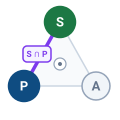

Spatial Memory
9 Spatial Memory

Purpose

Physical AI stack focus for this chapter.
How long can a robot act on a remembered scene after it loses sight of it?
A person hidden behind a storage rack can keep moving while the robot’s map still shows an empty aisle. Forgetting the person loses a constraint on motion; preserving the last position indefinitely turns old evidence into false certainty. The engineer must estimate the scene from measurements that arrive at different times with different errors, retain that estimate through brief sensing gaps, and limit how long it can support a decision. That limit depends on the motion the sensors cannot observe, the error already present, and the clearance the task can tolerate. A stored estimate must therefore carry both its physical age and the conditions under which its uncertainty remains bounded. The permission path needs that information in time to refuse motion whose evidence has expired. Spatial memory connects sensing to the causal boundary by preserving what an observation supports without extending its authority beyond the physical margin.
Learning Objectives
- Apply a state estimator’s predict and update steps to dated measurements, including late ones at their capture epoch, and test whether its reported covariance matches its actual error
- Track objects across frames without withholding occupancy evidence until their identity is confirmed
- Specify a belief record that carries evidence age, uncertainty growth, and consumer query budgets
- Compose transform chains at a common epoch, and trace how localization drift and loop closure move remembered map cells without renewing their evidence
- Select a spatial representation for a clearance query from the query it answers, the memory reads it costs, and the storage it needs
- Design spatial updates that preserve evidence age and distinguish missing observations from verified free space
- Set belief expiry from bounded uncertainty growth and the task’s physical tolerance
- Diagnose frozen transforms, phantom tracks, and unobservable drift that pass freshness and innovation checks
Explore the concepts in this chapter
The volume’s concept map, opened on this chapter. Select a concept to read how it connects to ideas in other chapters. Open the full map ↗
9.1 Spatial Belief Persistence and Expiry
On the warehouse mobile manipulator, intermittent observation becomes a hazard at every rack corner. As the robot pivots into a turn, structural uprights occlude the cross aisle from the navigation cameras, and whatever the vision backbone detected seconds earlier survives only in memory. A worker stepping around the corner can enter the corridor that memory still records as clear. Republishing the cached perception frame with a fresh software timestamp cannot replace the missing sensory evidence. The stopping budget assumes obstacles remain within declared clearances, and a person who arrives unseen violates that assumption. The open question is how long the remembered empty aisle may keep authorizing motion after the uprights hide it, and whether any amount of remembering can make the blind crossing safe.
Every physical AI system acts on a world it observes only intermittently. Perception delivers dated, calibrated observations, yet sensor frames arrive tens of milliseconds apart, a rack upright or a gripper finger can occlude a target surface for seconds, and the controller must keep issuing commands throughout those blind intervals. Spatial memory carries physical state across these perceptual gaps. In a conventional computing system, a value in memory remains valid indefinitely because external reality does not alter the digital state. In an embodied system, memory retains an exact representation of the past while the physical world continues to move. A cached state becomes stale not because bits decay, but because unobserved reality drifts away from the recorded value. The central operational question of spatial memory is how long a stored state may continue to authorize machine motion. The answer is a physical deadline rather than an arbitrary software timeout, determined by the initial measurement error, the rate at which unobserved dynamics can expand that error, and the clearance margins permitted by the task. Computing and enforcing that deadline requires five capabilities: an estimator that fuses dated measurements into a calibrated state distribution, a memory record that couples every geometric value to its capture epoch and an error-growth law, coordinate transforms and map structures that preserve those timestamps across aggregation, an invalidation mechanism derived directly from the growth model, and an accounting of unobservable environmental drift.
↩︎ Observations dated by capture epoch and carrying calibrated spatial covariances are established in The Observation Contract.
1 Belief State: Åström (1965) showed that a controller that cannot observe its state directly loses nothing by acting on the conditional distribution of that state given everything observed so far, the formalization encountered in Teacher-student privileged state distillation and asymmetric actor-critic as a partially observable decision problem. However, an abstract mathematical distribution carries no native reference frame, evidence epoch, or error-growth model. A physical runtime requires all three to verify whether a clearance corridor remains valid during a sensor dropout.
An embodied system cannot operate purely on instantaneous sensor frames, nor can it rely entirely on the implicit context cached inside a learned policy network. Instead, the architecture requires an explicit belief: an estimate of physical state projected forward from historical sensory evidence and paired with an explicit model of expanding uncertainty.1
Definition 9.1: Belief state
Belief state is an estimate of a physical quantity carried forward from dated sensor evidence, expressed within an explicit reference frame, accompanied by the evidence epoch \(\EvidenceEpoch\) of the most recent constraining measurement and a declared error-growth law \(\BeliefErrorBound(\FiniteChange \TimeInstant)\) that models uncertainty expansion in the absence of new data.
- Significance: A belief maps elapsed time into spatial uncertainty. The safety enforcement path permits motion only while \(\BeliefErrorBound(\FiniteChange \TimeInstant)\) remains within the task’s clearance envelope. Every belief therefore carries an invalidation horizon measured from \(\EvidenceEpoch\), beyond which the safety controller must reject any dependent trajectory.
- Distinction: A sensor measurement captures evidence from a single discrete instant. A belief estimates state at later points in time through forward propagation, remaining valid only as long as its growth law accurately bounds physical drift.
- Common pitfall: Mistaking publication recency for evidence freshness. Re-evaluating or republishing a belief updates software message timestamps, but only a new physical sensor measurement advances the evidence epoch \(\EvidenceEpoch\).
Spatial memory is the second of four proposal-side stages in Part III, positioned between perception and intent. Because it resides on the untrusted proposal side of the proposal boundary, spatial memory can shape proposed trajectories but cannot certify its own freshness. The permission path must independently evaluate the age of the underlying evidence against a local monotonic clock.
↩︎ The proposal boundary, above which learned components may only propose and below which the permission path alone admits commands, is established in The Machine in Five Levels.

Belief carries sensing across the gap to planning.Learned policies maintain internal history through recurrent states or transformer attention buffers, but these mechanisms keep or drop tokens according to a capacity budget rather than physical persistence. A transformer’s context window, and the key-value cache that stores it, holds a bounded number of tokens, so older tokens are evicted as new frames arrive (the streaming-window policies of section 9.6.3). When an obstacle steps behind a pallet rack, the tokens that recorded it can fall out of the window while newly observed features take their place, even though that obstacle continues to obstruct the physical corridor. An internal neural context window is therefore an unreliable sole record of physical state. Spatial memory decouples persistence from policy attention, explicitly preserving the entity, its last observed geometry, and an uncertainty volume that expands for as long as it remains occluded.
Externalizing physical state from the neural policy also cleanly decouples downstream consumers with divergent computational constraints. The motion planning policy queries a host-resident scene representation to extract a compact working set tailored to its candidate trajectory. In contrast, an isolated permission controller requires a strictly bounded local safety snapshot stored directly in its local memory to evaluate real-time clearance queries. This snapshot retains the raw evidence epochs, spatial uncertainties, geometric coverage bounds, and validity regions from the underlying beliefs. Replicating state across memory buses does not refresh its physical validity. The safety controller neither requires the complete global map nor waits for host queries to complete before deciding whether an ongoing motion remains admissible.
Internal software consistency does not guarantee physical geometric validity. To prevent an actuator from executing commands based on obsolete assumptions, an embodied memory system must elevate state expiration to an explicit interface event. Every stored belief carries an invalidation horizon, the deadline at which accumulated uncertainty consumes the task’s clearance margin (section 9.7.2). When that deadline passes, the belief immediately ceases to authorize motion. The permission path rejects any proposal that relies on the expired state and selects a fallback qualified for the remaining evidence, actuation authority, and clearance, such as a controlled stop.
Every belief and its corresponding invalidation deadline originate in a state estimator. The perception front-end streams discrete, timestamped, coordinate-framed measurements annotated with calibrated sensor covariances. Transforming these intermittent observations into a continuous physical state, backed by uncertainty bounds that faithfully reflect unobserved drift, is the first job of spatial memory.
9.2 Estimating State from Dated Measurements
A single LiDAR return or stereo match localizes the rack-end upright at one isolated instant. A physical safety permission path, however, requires a continuous range estimate that stays current between sweeps, fuses observations across heterogeneous sensors, and produces an uncertainty metric whose statistical confidence matches physical reality. A recursive state estimator satisfies all three demands by alternating two complementary operations: a prediction step that projects the state forward through a dynamic motion model, and an update step that incorporates each newly arrived, dated measurement. The discrete Kalman filter2 (Rudolph Emil Kalman 1960) provides the classical formulation of this recursion, establishing the mathematical foundation for this chapter (Thrun et al. 2005, ch. 3; Bar-Shalom et al. 2001). Multi-object tracking and delayed-observation handling apply these two steps directly. The belief decay under occlusion examined in section 9.7 corresponds to the prediction step executing without measurement updates, while the observability limits of section 9.8 define the state dimensions that no update stream can reconstruct. The mechanics are clearest on a scalar, the remaining distance \(\RemainingUprightDistance\) from the mobile base to the rack-end upright, so the two operations are worked through on it before the notation extends to full state vectors.
2 Kalman Filter: Stanley Schmidt’s group at NASA Ames took up Kálmán’s paper shortly after it appeared and, for circumlunar navigation studies, linearized the nonlinear measurement equations about the current estimate (Smith et al. 1962), the reformulation now called the extended Kalman filter. MIT’s Instrumentation Laboratory then carried the filter into Apollo’s on-board navigation in a square-root form suited to a computer with a short word length (McGee and Schmidt 1985). The recursion fit that computer because it keeps only the latest estimate and its covariance, never the measurement history, and the same property lets spatial memory hand a consumer one dated record instead of a log to replay.
The predict step advances the state estimate across time without incorporating new external evidence. Between two successive LiDAR sweeps separated by \(\NominalFrameInterval\) = 50 ms, wheel odometry (section 9.5.1) indicates that the mobile base closed the distance by \(\BaseOdometrySpeed\,\NominalFrameInterval\), yielding the prior prediction \(\RemainingDistanceEstimate^- = \RemainingDistanceEstimate - \BaseOdometrySpeed\,\NominalFrameInterval\). Odometry, however, carries inherent uncertainty. An illustrative speed disturbance of 0.1 m/s (from minor wheel slip on polished concrete, for example) accumulates 5 mm of standard deviation over that single sweep interval. Because independent errors combine in quadrature, \(\DistanceEstimateStandardDeviation^2_{-} = \DistanceEstimateStandardDeviation^2 + \OdometryNoiseStandardDeviation^2\), an initial 20 mm uncertainty expands to 20.6 mm. Without new measurement constraints, prediction inevitably inflates state uncertainty.
The robot’s inertial measurement unit (IMU) is the other source of high-rate data for the predict step, and its datasheet shows why dead reckoning cannot sustain an accurate estimate on its own. A sensor’s noise density states how much random error it adds per square root of measurement bandwidth, so white noise of density \(\SensorNoiseDensity\) integrated for \(\InertialIntegrationTime\) seconds spreads by \(\SensorNoiseDensity\sqrt{\InertialIntegrationTime}\), while a fixed offset integrates in proportion to \(\InertialIntegrationTime\). The Bosch BMI088 gyroscope has a rate-noise density of 0.014 °/s/\(\sqrt{\text{Hz}}\) alongside an uncalibrated zero-rate bias of 1 °/s. Its accelerometer has a noise density of 160 µg/\(\sqrt{\text{Hz}}\) and an uncalibrated zero-g offset of 20 mg (Bosch Sensortec 2024). Integrating these sensor signals accumulates error, and stochastic noise compounds along a different trajectory than deterministic bias. Broadband white noise integrates in variance, causing orientation uncertainty to grow with the square root of time. Across 1 s without external range correction, it accumulates only 0.014°. In contrast, a constant bias integrates linearly, producing heading drift proportional to time that reaches 1° over that same second. At 1.10 m, this angular error projects into 19.2 mm of lateral displacement for the rack upright. Because acceleration undergoes double integration to give position, its bias scales quadratically with elapsed time (\(\tfrac{1}{2} \AccelerometerBias \InertialIntegrationTime^2\)). The bias generates 98.1 mm of drift after one second, about twice the 50 mm localization allowance. Integrated accelerometer white noise contributes only 0.9 mm (its position variance grows with the cube of time, a law derived in section 9.7). In this illustrative uncalibrated case, sensor offsets dominate broadband noise and limit how long the inertial system can coast uncorrected. Practical estimators therefore augment the state vector to estimate these biases online. This works only while the available measurements and executed motion constrain the relevant bias components (the observability condition of section 9.8). The estimators also use the underlying noise densities to parameterize the process noise, the matrix generalization of the odometry variance \(\OdometryNoiseStandardDeviation^2\) that the general filter below writes as \(\ProcessNoiseCovariance\). Because these offsets drift with temperature and vary across physical chips, operating parameters must be identified through in-situ stationary calibration on the physical platform rather than taken from static datasheet ratings.
The update step incorporates a fresh scalar measurement \(\DistanceMeasurement\) characterized by variance \(\DepthStandardDeviation^2\). The updated posterior is a linear combination, \(\RemainingDistanceEstimate = (1-\ScalarKalmanGain)\,\RemainingDistanceEstimate^- + \ScalarKalmanGain\,\DistanceMeasurement\). Assuming the prior prediction error and measurement noise remain statistically independent, the posterior variance evaluates to \((1-\ScalarKalmanGain)^2 \DistanceEstimateStandardDeviation^2_{-} + \ScalarKalmanGain^2 \DepthStandardDeviation^2\). Minimizing this variance with respect to the blending weight \(\ScalarKalmanGain\) produces the optimal Kalman gain, which balances each information source inversely against its relative uncertainty: \[\ScalarKalmanGain = \frac{\DistanceEstimateStandardDeviation^2_{-}}{\DistanceEstimateStandardDeviation^2_{-} + \DepthStandardDeviation^2}, \qquad \RemainingDistanceEstimate = \RemainingDistanceEstimate^- + \ScalarKalmanGain\,(\DistanceMeasurement - \RemainingDistanceEstimate^-), \qquad \DistanceEstimateStandardDeviation^2 = (1 - \ScalarKalmanGain)\,\DistanceEstimateStandardDeviation^2_{-}\] The residual \(\DistanceMeasurement - \RemainingDistanceEstimate^-\) constitutes the innovation, the new information supplied by the measurement that the forward projection did not capture. Given the Ouster OS1-64’s worst-case datasheet range precision of 30 mm, the computed gain is 0.32. The estimator shifts approximately one-third of the way toward the raw LiDAR reading, contracting the posterior standard deviation to 17.0 mm, a modeled spread tighter than either input alone. Because published precision specifications typically reflect ideal calibration conditions rather than real-time operating modes, this sensor variance must be verified at the configured operational scan rate. Furthermore, the sensor’s separate 25 mm systematic accuracy offset represents a structural bias that zero-mean Gaussian models cannot accommodate; offline calibration must eliminate this offset, or the downstream safety clearance margin must absorb it explicitly.
Fusing a second sensor executes as a sequential update step. The illustrative stereo camera rig analyzed in Spatial Error and Clearance Bounds achieves \(\DepthStandardDeviation =\) 3.8 mm at the 1.10 m rack-end distance. Fusing this measurement yields a stereo gain of 0.95, shrinking the final fused standard deviation to 3.7 mm. For statistically independent measurements captured at the same physical instant, update ordering is commutative: each observation contributes an information increment, and their underlying precision matrices (inverse variances) sum directly.
A misdated measurement breaks this estimation algebra silently. Suppose a stereo depth observation is tagged with its host arrival timestamp, which Dating and Placing the Measurement shows hides exposure, readout, and transport delay, rather than with its physical exposure epoch. The filter erroneously pairs this observation with a robot pose 39.9 mm further along the aisle than where the photons actually struck the sensor. Consequently, the measured range reads systematically long by that spatial displacement, causing the update to drag the state estimate 38.0 mm away from the physical obstacle while reporting the same deceptively tight 3.7 mm standard deviation. The resulting physical error spans approximately 10.3 reported standard deviations in the hazardous direction, yet the filter’s covariance update detects nothing amiss because algebraic variance reduction depends entirely on modeled sensor noise rather than measurement residuals. Corrupt timestamps are therefore far more dangerous than dropped sensor frames. Dropping the stereo frame instead would leave the posterior uncertainty at 17.0 mm, imprecise but statistically honest.
Set side by side on one range-error scale (figure 1), the stages read as a single story. Prediction widens the bar from 20 mm to 20.6 mm, each update narrows it below both of its inputs to a final 3.7 mm, and the misdated column reports that same tight spread while its center sits 38.0 mm from the true range, the only bar that does not contain the truth.

The recursion generalizes from a scalar distance to an \(\StateDimension\)-dimensional state vector \(\StateEstimate\) with error covariance \(\EstimationErrorCovariance \in \mathbb{R}^{\StateDimension \times \StateDimension}\). It parameterizes system dynamics through a state transition matrix \(\StateTransitionMatrix\), process noise covariance \(\ProcessNoiseCovariance\), an observation matrix \(\MeasurementMatrix\) projecting state space into measurement space, and measurement noise covariance \(\MeasurementNoiseCovariance\) (equation 1 and equation 2): \[\PredictedStateEstimate = \StateTransitionMatrix\,\PreviousUpdatedStateEstimate, \qquad \PredictedErrorCovariance = \StateTransitionMatrix\,\PreviousUpdatedErrorCovariance\StateTransitionMatrix^\top + \ProcessNoiseCovariance \tag{1}\] \[\MeasurementInnovation_k = \MeasurementVector_k - \MeasurementMatrix\PredictedStateEstimate, \quad \InnovationCovariance_k = \MeasurementMatrix\PredictedErrorCovariance\MeasurementMatrix^\top + \MeasurementNoiseCovariance, \quad \KalmanGain_{k} = \PredictedErrorCovariance\MeasurementMatrix^\top\InnovationCovariance_k^{-1}, \quad \UpdatedStateEstimate = \PredictedStateEstimate + \KalmanGain_{k}\MeasurementInnovation_k, \quad \UpdatedErrorCovariance = (\IdentityMatrix - \KalmanGain_{k}\MeasurementMatrix)\,\PredictedErrorCovariance \tag{2}\] In this formulation, \(\MeasurementInnovation_k\) represents the innovation vector, \(\InnovationCovariance_k\) denotes innovation covariance, and \(\KalmanGain_{k}\) signifies the Kalman gain matrix (designated \(\KalmanGain_{k}\) to reserve \(\Glyph{\mathbf{K}}\) for camera intrinsic calibration matrices). The preceding scalar analysis corresponds to the degenerate setting \(\StateTransitionMatrix = \MeasurementMatrix = 1\), with the odometry displacement \(-\BaseOdometrySpeed\,\NominalFrameInterval\) entering as a known control input. Equation 1 omits that input term for brevity, and the term shifts the mean without changing \(\EstimationErrorCovariance\). Under linear dynamics and additive Gaussian noise, this closed-form update yields the provably optimal minimum-variance unbiased estimate. If nonlinearities or non-Gaussian noise corrupt the process, the update functions merely as an empirical linear estimator whose output covariance requires experimental validation.
Physical robotic sensors are inherently nonlinear functions of platform state. A LiDAR range measurement to the rack upright evaluates to \(\UprightRange = \|\UprightPosition - \BasePosition\|\), while a camera records target bearings through the nonlinear pinhole projection detailed in equation 8.2. The extended Kalman filter (EKF) (Smith et al. 1962) adapts equation 2 to nonlinear regimes by evaluating the measurement function \(\MeasurementFunction(\PredictedStateEstimate)\) directly and substituting the linear projection \(\MeasurementMatrix\) with the measurement Jacobian \(\nabla_{\EstimatorState} \MeasurementFunction\) evaluated at the current state prediction. For a scalar range reading, this Jacobian with respect to platform base position reduces to the unit line-of-sight vector directed from the upright toward the base. This Taylor-series linearization is a first-order approximation. Substantial curvature across the prior distribution, common when estimating bearings to nearby obstacles or operating under broad initial uncertainty, can therefore cause the EKF to underestimate its true estimation error (Julier and Uhlmann 2004). This failure mode makes the empirical consistency evaluations of section 9.2.1 safety requirements rather than optional checks.
The unscented Kalman filter (UKF) developed by Julier and Uhlmann (1997) bypasses analytical Jacobians through deterministic sampling. For an \(\StateDimension\)-dimensional state vector, the UKF instantiates \(2\StateDimension+1\) sigma points structured around the matrix square root of \(\EstimationErrorCovariance\), propagates each sample point through the true nonlinear observation function, and reconstructs the transformed posterior mean and covariance (Julier and Uhlmann 2004). This transformation captures higher-order curvature effects on the mean that the EKF truncates, requiring \(2\StateDimension+1\) functional evaluations per cycle. The UKF nevertheless approximates the posterior as a unimodal Gaussian, leaving it subject to identical qualification and consistency standards.
Both filtering frameworks, and the multi-object tracking and out-of-sequence replay built on them, depend on every sensor measurement being indexed by its true capture epoch. The misdated stereo benchmark illustrates the breakdown when this assumption fails. While reported uncertainty remained artificially compressed, true physical error drifted across ten standard deviations. A reported covariance is therefore an engineering hypothesis that must be systematically validated against real-world data.
9.2.1 Testing whether the covariance is honest
Catching an overconfident covariance like the misdated stereo filter’s requires two complementary statistical tests: an offline qualification metric evaluated against ground truth before deployment, and an online runtime monitor evaluated directly against incoming measurement streams during operation. Both formulations use a zero-mean Gaussian error model with the correct nonsingular covariance. Whitening the error under these assumptions produces independent standard normal coordinates; their squared norm, rather than the error vector itself, follows a chi-squared distribution. Matching covariance alone does not establish Gaussian tails.
A filter achieves statistical consistency when its reported covariance matches the dispersion of its actual state errors. When offline ground truth is accessible (a laser-tracker survey of the rack upright, say, with an optical motion-capture reference for the base pose), the normalized estimation error squared (NEES), \(\NeesStatistic_k = (\EstimatorState_k - \StateEstimate_k)^\top \EstimationErrorCovariance_k^{-1} (\EstimatorState_k - \StateEstimate_k)\), evaluates the system. Under that zero-mean Gaussian model with the correct nonsingular covariance, whitening the error of an \(\StateDimension\)-dimensional state forms a vector of \(\StateDimension\) independent standard normal variates. Their sum of squares follows a chi-squared distribution with \(\StateDimension\) degrees of freedom and theoretical mean \(\StateDimension\). Evaluated across \(\TrialCount\) statistically independent experimental trials, the scaled sample mean \(\TrialCount\MeanNeesStatistic\) follows a chi-squared distribution with \(\TrialCount \StateDimension\) degrees of freedom (Bar-Shalom et al. 2001). For the scalar rack-end distance over 50 experimental trials, the two-sided 95 percent acceptance interval for sample mean NEES \(\MeanNeesStatistic\) spans from 0.65 to 1.43. An empirical NEES above this band flags an overconfident filter, the safety-critical defect, because its reported uncertainty understates the error that clearance buffers must absorb. Conversely, an average falling below the lower bound indicates an underconfident filter whose inflated covariance unnecessarily throttles vehicle operating speed.
While absolute ground truth remains unavailable during live deployment, the estimator can continuously audit its measurement innovations. The normalized innovation squared (NIS), \(\MeasurementInnovation_k^\top\InnovationCovariance_k^{-1}\MeasurementInnovation_k\), follows a chi-squared distribution with \(\MeasurementDimension\) degrees of freedom for an \(\MeasurementDimension\)-dimensional measurement vector under valid model assumptions, so its expected value is \(\MeasurementDimension\). The same statistic reappears below as the data-association gate. A bias \(\InnovationBias\) in the innovation adds \(\InnovationBias^2/\InnovationVariance\) to that expectation, where \(\InnovationVariance\) is the innovation variance. For the misdated stereo observation in figure 1, \(\InnovationBias\) is the 39.9 mm arrival-stamp travel, and the expected NIS rises from 1 to 6.25. A single misdated update’s NIS then follows a noncentral chi-squared distribution, the bias setting its offset and the sensor noise its spread. One update therefore breaches the 95 percent validation gate of 3.84 with probability 0.63, and trips the 99 percent threshold of 6.63 only 0.39 of the time. Single-frame residual gating therefore admits a substantial fraction of corrupted measurements. Averaging independent innovations reduces sampling variation and can expose a persistent residual bias. For 50 independent scalar innovations under the valid model, the mean NIS has the same 0.65 to 1.43 acceptance band derived above for NEES. Independent repetitions of the worked misdated update average near 6.25, far above it. A sequential filter can instead absorb a systematic dating error into its state, reducing later innovations; correlated innovations also invalidate this nominal band. A runtime sliding-window NIS supervisor therefore detects dating errors that persist in the innovations, but cannot replace capture-epoch validation. Once an estimator’s covariance and innovations are calibrated on a single landmark, the next challenge is maintaining separate filters across multiple moving objects without confusing their identities.

A per-update gate catches one misdated update only 0.63 or 0.39 of the time.
9.2.2 Multi-object tracking and data association
Maintaining separate filters across multiple moving objects adds an immediate architectural constraint: a perception pipeline cannot withhold an obstacle detection until a multi-frame tracker confirms its persistent identity, or a worker stepping into the aisle remains invisible to collision avoidance during the confirmation window. A fresh occupied-region claim must therefore constrain vehicle motion immediately, before perception systems identify the specific obstacle class or confirm a track. Persistent identity serves a distinct behavioral objective: correlating detections across frames allows the motion planner to estimate target velocity vectors and anticipate dynamic crossing events, while immediate spatial occupancy protects reactive clearance.
The software architecture therefore decouples immediate geometric spatial occupancy from the tracking-by-detection hypothesis. The tracking layer associates incoming detections, filters kinematic velocities, and tracks multi-dimensional uncertainty. Track retirement follows the lifecycle below, and how state persists when measurements stop is the subject of section 9.7. The state equations formulated below govern the kinematic information a confirmed track provides, rather than serving as a prerequisite for reactive collision avoidance.
Each active track \(\TrackIndex\) maintains an independent state filter tracking a kinematic state vector \(\StateEstimate_t = [\EstimatedPosition_t^\top, \EstimatedVelocity_t^\top]^\top\) with error covariance \(\EstimationErrorCovariance_t \in \mathbb{R}^{6\times6}\). A discrete constant-velocity transition matrix \(\StateTransitionMatrix\) and process noise covariance \(\ProcessNoiseCovariance\) advance this state between sensory frames through the prediction step of equation 1, which carries the mean forward and grows the covariance by the process noise. When an incoming perception frame yields \(\DetectionCount\) candidate detections \(\{\MeasurementVector_{t, j}\}_{j=1}^{\DetectionCount}\) (the frame index \(\TrackerFrameIndex\) plays the role of the step index \(\EstimatorStepIndex\) in equation 1), the tracker must resolve data association,3 mapping candidate detections to established state tracks. To prevent spurious sensor noise or distant clutter from corrupting legitimate tracks, the tracker evaluates the squared Mahalanobis distance \(\MahalanobisDistance^2\) between detection \(\MeasurementVector_{t, j}\) and the projected measurement \(\MeasurementMatrix\TrackPredictedStateEstimate\): \[\MahalanobisDistance^2 = (\MeasurementVector_{t, j} - \MeasurementMatrix\TrackPredictedStateEstimate)^\top \InnovationCovariance_{ij}^{-1} (\MeasurementVector_{t, j} - \MeasurementMatrix\TrackPredictedStateEstimate) \tag{3}\] where \(\InnovationCovariance_{ij} = \MeasurementMatrix\TrackPredictedErrorCovariance\MeasurementMatrix^\top + \DetectionMeasurementNoiseCovariance\) defines the innovation covariance from equation 2 and \(\DetectionMeasurementNoiseCovariance\) specifies the measurement noise covariance; this validation metric is identical to the NIS metric defined in section 9.2.1. An ellipsoidal validation gate evaluates equation 3, rejecting any pairing where \(\MahalanobisDistance^2 > \ValidationGateThreshold\). The gating threshold \(\SquaredGaussianSumQuantile_3^2(1 - \HypothesisTestSignificanceLevel)\) possesses three degrees of freedom corresponding to three-dimensional Cartesian position measurements, retaining its theoretical significance only while residual Gaussian assumptions hold. For all candidate pairings satisfying the gate, the tracker builds an assignment cost matrix with entries \(\AssociationCostEntry_{ij} = \MahalanobisDistance^2\) and computes the global minimum-cost one-to-one match. It uses either the Hungarian algorithm (Kuhn 1955), as the Simple Online and Realtime Tracking (SORT) baseline does (Bewley et al. 2016), or the Jonker-Volgenant shortest-augmenting-path solver (Jonker and Volgenant 1987). The match is optimal only for the costs it was given; it does not guarantee that each pairing is physically correct.
3 Data Association in Clutter: Radar tracking met this problem first. Bar-Shalom and Tse (1975) showed that a filter which commits to the single nearest return inside its gate can follow clutter and lose the target, and they weighted every gated return by its probability of having come from the target instead. A tracker that commits to one assignment per frame, as this one does, reveals a wrong pairing only through inconsistent innovations, so a confirmed track’s covariance must still pass the tests of section 9.2.1.
The tracking lifecycle organizes target hypotheses through three discrete states:
- Tentative state: Unassociated detections instantiate tentative candidate tracks. Because sensor artifacts (specular reflections, dust particles, optical lens flare) generate transient false positives, candidate identities remain tentative until satisfying an \(\ConfirmationHitCount\)-of-\(\ConfirmationWindowCount\) frame confirmation policy (associated in at least \(\ConfirmationHitCount\) of the last \(\ConfirmationWindowCount\) frames). Raw geometric occupancy claims remain immediately accessible to vehicle collision-avoidance buffers throughout this confirmation window. If a downstream behavioral planner requires confirmed object identity or calibrated velocity, its latency allocation must account for this multi-frame confirmation interval rather than relying solely on the single-frame pipeline latency described in The latency waterfall.
- Confirmed state: Upon passing confirmation criteria, the track registers as confirmed and publishes its complete kinematic state \((\text{ID}_i, \EstimatedPosition_i, \EstimatedVelocity_i, \EstimationErrorCovariance_i)\) to planning and safety subsystems. Each newly associated measurement refines the track via equation 2, correcting the mean vector and contracting the error covariance matrix. Because this update achieves minimum variance only under linear-Gaussian assumptions, tracked covariances must continuously satisfy the consistency criteria established in section 9.2.1.
- Coasting state (occlusion): When an obstacle moves behind storage shelving or suffers transient occlusion by another vehicle, object detection fails. Rather than immediately dropping the entity, the tracker transitions the hypothesis into an unobserved coasting state. During coasting, state propagation proceeds strictly through kinematic motion model \(\StateTransitionMatrix\) in equation 1, while process noise \(\ProcessNoiseCovariance\) progressively inflates state covariance in the absence of measurement constraints. Downstream path planners must compensate for this increasing uncertainty by applying progressively widening clearance margins. If no matching observation associates within timeout window \(\TrackLossTimeout\), the active track terminates. Terminating a track reflects the loss of persistent identity rather than the clearance of physical space, so the spatial map must retain an appropriate unknown-space constraint (section 9.6). The rate at which coasting uncertainty degrades spatial traversability is the belief expiry problem formulated in section 9.7.
To support real-time planning under motion uncertainty, the tracker continuously serializes an auditable dynamic track manifest \([(\text{ID}_k, \EstimatedPosition_k, \EstimatedVelocity_k, \EstimationErrorCovariance_k, \TrackLastUpdateTime, \text{state})]\). The intent layer consumes these velocity vectors and covariance ellipses to bound the region each object could occupy over the planning horizon, while real-time safety enforcement systems compute certified stopping clearances against moving dynamic obstacles. Even when a detection associates cleanly with the right track, however, vision inference delay means that camera detections routinely arrive after newer LiDAR sweeps and IMU samples have already advanced the filter.
↪ The track manifest’s velocities and covariances are developed as forward occupancy sets in Dynamic obstacle forecasting and forward occupancy.
9.2.3 Applying a delayed observation
Fusing such a delayed visual detection directly into the estimator’s current state pulls the position estimate backward toward where the obstacle stood at exposure time and corrupts the velocity vector. The physical capture epoch preserved by the observation contract enables the estimator to integrate these delayed measurements at their historical capture instant instead, provided the system maintains a calibrated state history and dynamic motion model. Rolling the filter back to that capture instant applies the update of equation 2 to the historical state estimate \(\StateEstimate\), error covariance \(\EstimationErrorCovariance\), observation model \(\MeasurementMatrix\), and Kalman gain \(\KalmanGain_{k}\).
A delayed visual observation must correct the state at its true historical capture epoch before the estimator can project the correction forward to current wall-clock time. Robust systems implement this mechanism using an out-of-sequence ring buffer, a circular array whose slot \(\EstimatorStepIndex\) holds the prediction \(\PredictedStateEstimate\) and covariance \(\PredictedErrorCovariance\) for IMU sample \(\EstimatorStepIndex\), the IMU input \(\MotionModelInput_k\) that drove it, and that sample’s capture time. The buffer needs \(\RingBufferSlotCount = \lceil \RingBufferHorizon / \FiniteChange \ImuSampleTime \rceil\) slots, where \(\FiniteChange \ImuSampleTime\) is the IMU sample period and the buffer horizon \(\RingBufferHorizon\) is the oldest observation age the estimator will still accept. On the running machine, the IMU samples at 1 kHz (\(\FiniteChange \ImuSampleTime =\) 1 ms), so covering the navigation camera’s 51.6 ms observation age takes 52 slots. A consumer must either interpolate the buffered state to the observation’s actual capture time or charge the bounded nearest-sample timing discrepancy to the error model. In the equations below, subscripts index IMU samples; \(\CaptureSampleIndex\) and \(\ReceiptSampleIndex\) name the samples whose capture times are nearest the observation’s capture epoch and its receipt. When an out-of-sequence observation \(\DelayedObservation\) arrives at receipt sample \(\ReceiptSampleIndex\), the estimator rolls back to sample \(\CaptureSampleIndex\), retrieves the historical prediction \(\CaptureSamplePredictedEstimate\), computes the corresponding innovation and Kalman gain, and applies the update of equation 2 at that historical instant (equation 4): \[\CaptureSampleUpdatedEstimate = \CaptureSamplePredictedEstimate + \CaptureSampleKalmanGain (\DelayedObservation - \CaptureSampleMeasurementMatrix \CaptureSamplePredictedEstimate), \quad \CaptureSampleUpdatedCovariance = (\IdentityMatrix - \CaptureSampleKalmanGain\CaptureSampleMeasurementMatrix) \CaptureSamplePredictedCovariance \tag{4}\] For the forward propagation pass that follows, consider first the baseline case with no intervening updates from other sensors; in general configurations, any intervening sensor updates within the interval must be sequentially re-applied in timestamp order. Because nonlinear motion models and their linearized transition matrices \(\StateTransitionMatrix_k\) depend on the state trajectory itself, the estimator cannot simply add the historical state shift to the current estimate, and instead executes a rapid replay sweep, re-integrating the buffered IMU inputs \(\MotionModelInput_k\) from sample \(\CaptureSampleIndex\) to sample \(\ReceiptSampleIndex\) through the continuous motion model \(\ContinuousMotionModel(\EstimatorState, \MotionModelInput)\), the state’s rate of change under input \(\MotionModelInput\), using the corrected state \(\CaptureSampleUpdatedEstimate\) as its initial condition. This forward integration synchronizes current state estimate \(\ReplayedStateEstimate\) with the newly arrived observation without introducing non-causal state discontinuities (equation 5): \[\ReplayedStateEstimate = \CaptureSampleUpdatedEstimate + \sum_{k = \CaptureSampleIndex}^{\ReceiptSampleIndex-1} \ContinuousMotionModel(\StateEstimate_k, \MotionModelInput_k) \FiniteChange \ImuSampleTime \tag{5}\] with covariance propagation across the replay interval governed by unrolling the single-step covariance recursion of equation 1 through the discrete transition matrix product \(\IntervalTransitionMatrix(\ReceiptSampleIndex, \CaptureSampleIndex) = \prod_{k = \CaptureSampleIndex}^{\ReceiptSampleIndex-1} \StateTransitionMatrix_k\) to carry the newly contracted historical covariance \(\CaptureSampleUpdatedCovariance\) and each intermediate process-noise increment forward: \[\ReplayedErrorCovariance = \IntervalTransitionMatrix(\ReceiptSampleIndex, \CaptureSampleIndex) \CaptureSampleUpdatedCovariance \IntervalTransitionMatrix^\top(\ReceiptSampleIndex, \CaptureSampleIndex) + \sum_{k = \CaptureSampleIndex}^{\ReceiptSampleIndex-1} \IntervalTransitionMatrix(\ReceiptSampleIndex, \EstimatorStepIndex+1) \ProcessNoiseCovariance_k \IntervalTransitionMatrix^\top(\ReceiptSampleIndex, \EstimatorStepIndex+1) \tag{6}\] The applicability of this rewind-and-replay routine (equation 6) is strictly limited by ring buffer horizon \(\RingBufferHorizon\). If scheduling jitter or memory bus contention delays an observation such that \(\ObservationAge > \RingBufferHorizon\), the circular buffer has already overwritten the slot for sample \(\CaptureSampleIndex\). In this scenario, the estimator must reject the stale measurement, permit process noise covariance \(\ProcessNoiseCovariance\) to grow the predictive covariance \(\EstimationErrorCovariance\), and immediately notify downstream safety paths that external visual grounding has degraded.
End-to-end vision-language-action (VLA) policies confront this identical out-of-sequence dilemma when ingesting asynchronous visual frames without an explicit state-space ring buffer. The observation tokenizer developed in The Observation Contract pairs each sensory token with its elapsed time since capture, leaving formal validation of the estimate and action-permission gating to dedicated safety monitors.
Checkpoint 9.1: The estimator behind every belief
Every belief the rest of the chapter ages is the output of this estimator. These items test whether you can run it and whether you can tell when its reported uncertainty is honest.
The state estimator outputs the core data record that persistent spatial memory maintains: a kinematic state vector, its verified covariance, the physical instant the state describes, and the capture epochs of the raw sensor observations that last constrained it. Forward prediction and rewind-replay passes maintain temporal currency across execution cycles, but only external sensor measurements inject genuine physical evidence, and neither mathematical projection advances the underlying evidence timestamps. Because downstream consumers must independently audit when a stored belief expires once an obstacle slips into occlusion, this state record must carry explicit temporal provenance alongside its numerical estimates. The handoff challenge is defining the exact contract a downstream consumer requires to evaluate stored spatial beliefs when direct line of sight is lost.
9.3 The Spatial Memory Handoff and State Invariants
A position vector arriving over an inter-process communication bus cannot identify the entity, physical quantity, or units it describes. The same sequence of floating-point values could denote a workpiece center in meters, a joint angle in radians, or a contact force in newtons. A consumer requires these distinctions before executing a control law; a confusion between meters and millimeters alone scales the interpreted displacement by a factor of one thousand. The belief record therefore explicitly packages entity identity, physical quantity, and measurement units at its foundation, rather than relying on conventions hidden in the producing model or transport wrapper.
Specifying the quantity and units remains incomplete without binding the value to a concrete reference frame. Identical spatial coordinates describe entirely different physical realities depending on the origin and orientation of the coordinate system. A Cartesian position \([0.142, -0.051, 0.812]\text{ m}\) read in the robot base frame names a point about 0.8 m above the chassis origin, in open air over the base. Read in the tool flange frame, the same three numbers name a point 0.812 m out along the flange’s approach axis, wherever the arm happens to point; with the gripper aimed at the cage door, that point lies inside the door rather than above the chassis. Because kinematic links flex, joints move, and coordinate transforms update at varying rates across distributed nodes, a belief record must carry an explicit frame identifier. Attaching the frame allows the receiving node to query the spatial transformation tree and project the stored geometry into the local frame required by the actuator, preventing the controller from acting on geometric misalignments caused by moving kinematic chains.
Geometry and identity describe physical state at a single moment, but spatial memory must also capture the temporal anchor of that state. The record carries the evidence epoch \(\EvidenceEpoch\) of the physical interaction or optical exposure that last constrained the estimate, the instant at which a sensor transduced the evidence. In distributed machine architectures, intermediate nodes often republish data, execute Kalman filter prediction steps, or run forward kinematic propagations to maintain high-rate control streams; none of these computational steps adds physical evidence. Republishing and prediction must preserve the evidence epoch; a measurement update may renew only the components it physically constrains. Consumers therefore measure evidence age against the physical world rather than the scheduling frequency of the local computer.
At the boundary of the multi-sensor state estimator (section 9.2), downstream consumers do not need to rerun the filter recursion or repeat the consistency tests of section 9.2.1; they need only the resulting state, its justified error model, and the physical evidence that constrains each relevant component. Within that recursion, a prediction step advances the estimate epoch, the instant the propagated state describes (formalized in section 9.4), while its underlying physical evidence continues aging. A fresh measurement, by contrast, renews only the state dimensions it directly constrains. The spatial memory handoff therefore obliges the producer to expose bounded growth through occlusion and withdraw claims whose operating assumptions no longer hold.
Knowing the evidence epoch \(\EvidenceEpoch\) establishes elapsed time \(\FiniteChange \TimeInstant = \TimeInstant - \EvidenceEpoch\), but elapsed time alone cannot determine whether a belief is valid for a given action. Two estimates of identical age diverge at different rates depending on physical constraints. A warehouse rack end bolted to the floor maintains a stationary position; its remembered boundary can remain useful while the machine’s localization bound and the fixed-rack premise hold. In contrast, an occluded person hidden behind that rack can move at walking speed and close the narrow gap beside it before the next camera frame arrives.
The minimum record fields necessary for a consumer to evaluate a stored state can be derived directly from the requirement to bound current error. Let \(\BeliefErrorBound(\FiniteChange \TimeInstant)\) represent the upper bound of the discrepancy between the stored value and true physical state after an elapsed time \(\FiniteChange \TimeInstant = \TimeInstant - \EvidenceEpoch\). If an estimator establishes a state at time \(\EvidenceEpoch\) with an initial uncertainty bound \(\InitialTrackingError\), and external disturbances or unmodeled velocities cause the true state to diverge at a maximum rate \(\ErrorGrowthRate\), the upper bound on error at current time \(\TimeInstant\) obeys the linear expansion \(\BeliefErrorBound(\FiniteChange \TimeInstant) = \InitialTrackingError + \ErrorGrowthRate\,\FiniteChange \TimeInstant\). At the rack end, the stored spatial claim asserts that no person stands near the machine. Here \(\InitialTrackingError\) is the machine’s localization error, \(\ErrorGrowthRate\) is the walking speed at which an occluded person can advance toward the vehicle, and the safety tolerance is the depth of observed free space beyond the machine’s clearance envelope. Other disturbances grow error faster. A bounded unmodeled acceleration adds a quadratic term, and random acceleration noise, integrated twice, makes position variance grow with the cube of elapsed time, both derived in section 9.7. Omitting the initial bound or the dynamic growth terms leaves the consumer unable to compute \(\BeliefErrorBound(\FiniteChange \TimeInstant)\), making an initial bound and an explicit expansion model structurally required fields of the record.
Expressing uncertainty through physical bounds and expansion rates distinguishes a physical AI belief from a probabilistic confidence score. An object detection network might output a class confidence of \(0.94\), but that softmax score is not calibrated evidence (The softmax illusion and out-of-distribution overconfidence), and a downstream position controller cannot convert a unitless probability into a safe actuator displacement margin (that is, how far the arm can physically move before risking a collision). A confidence score of \(0.94\) provides no information about whether an obstacle boundary is uncertain by \(2.0\text{ mm}\) or by \(200\text{ mm}\), nor does it indicate how rapidly that boundary uncertainty grows when occlusion occurs. A physical memory record must express its initial bound \(\InitialTrackingError\) and expansion rate \(\ErrorGrowthRate\) in concrete physical dimensions such as meters, radians, or newtons per second. These rates are valid only within a declared validity region, such as a maximum assumed acceleration or a verified contact friction coefficient. If physical operating conditions leave that region, the expansion rate no longer holds, and the belief record must be treated as invalid.
At the spring-latched cage door, the gripper finger must enter a narrow latch-release slot that the finger itself hides from the wrist camera during the final approach. Before relying on the remembered slot pose, the consumer compares the belief’s current error with the slot clearance. It converts the evidence epoch into its own clock domain, includes the clock-conversion bound, and evaluates the declared growth law at the time the state will be used. This check is a continuing obligation during execution, not a one-time path-generation check. A new motion proposal whose evidence fails the check is refused without automatically revoking a still-valid active command. If the active motion itself depends on expiring evidence, the controller must begin a feasible fallback maneuver early enough that the mechanism halts within the available clearance. The machine must therefore remain inside its recoverable set, the states from which a qualified stop still fits within the remaining clearance, a boundary that Stopping Envelopes derives from the finished stopping budget. The belief’s expiry is a limit on supported motion, not a promise that an instantaneous stop is physically possible at that deadline.
The fields a consumer needs for this check travel together as the belief record, the seventh record in the record chain. At this stage, the record binds an identified physical quantity, with its unit, to a reference frame, an evidence epoch, an initial error bound, an uncertainty-growth law, and the validity region in which that law holds. The sections that follow add the fields each new problem demands (the estimate epoch and clock-conversion bound, a per-consumer query-work limit, the expiry deadline, provenance, and lifecycle status), and section 9.10 assembles the complete record. A classification score, a map publication time, or a transform value alone cannot supply that contract, because none couples physical units and evidence age to an error-growth law. The record makes the claims checkable; qualification must establish that they hold. A consumer cannot wait for an upstream publisher to announce expiry. If that publisher’s thread hangs or its message stream stops, the consumer must still age the evidence autonomously and enforce its own safety deadline.
Evaluating the belief record depends on calculating the elapsed time \(\FiniteChange \TimeInstant = \CurrentTime - \EvidenceEpoch\) against physical reality. If the consumer cannot verify the exact physical instant when energy transduction occurred, the calculated error bound \(\BeliefErrorBound(\FiniteChange \TimeInstant)\) becomes an unanchored fiction, mistaking software compute cycles for physical evidence. Protecting that anchor is the job of the next two fields, the estimate epoch and the clock-conversion bound.
9.4 State Epochs and Temporal Anchoring
A bounding box or 3D Gaussian pose emitted by a neural object detector describes where an entity was when photons struck the camera CMOS sensor, not where it is when the inference tensor arrives in memory. Every spatial claim refers to a specific physical instant, its epoch, and any state crossing a physical AI pipeline carries three distinct epochs before an actuator can fire. The acquisition epoch (\(\AcquisitionEpoch\)) anchors the observation contract to physical ground truth: the exposure midpoint for a camera frame, or the precise instant a hardware register latches an optical encoder count. Every observation carries its own acquisition epoch (the capture epoch of Dating and Placing the Measurement). For each state component used by a consumer, the evidence epoch is the latest acquisition epoch of a measurement that constrained that component; for a belief built from one observation, the two coincide. A record combining differently constrained components must preserve those epochs separately, or use a conservative shared epoch and growth bound that supports every component the query needs. The rest of the chapter speaks of the evidence epoch whenever the belief, not a single observation, is meant. Downstream processing then introduces two subsequent epochs. The estimate epoch (\(\EstimateEpoch\)) marks the physical instant that the estimated state describes. A kinematic predictor or state observer can advance this temporal coordinate beyond the last observation without receiving fresh measurements; the instant computation completes is a separate scheduling detail. The publication epoch (\(\PublicationEpoch\)) marks the instant the serialized state record is committed to the transport bus or shared-memory ring buffer for dispatch to downstream consumers.
Collapsing these three timestamps into a single receipt or transmission timestamp destroys the physical anchor. This is the publish-timestamp anti-pattern of Measurement Freshness, in which a wrapper stamps its output with the system wall clock after exposure, transport, inference, and postprocessing have already elapsed. What memory adds is a second way to commit it. A wrapper that stamps a propagated estimate with its publication epoch, or a filter that renews \(\EvidenceEpoch\) when it advances \(\EstimateEpoch\), hides the evidence age just as surely as one that stamps a raw frame on arrival. Downstream receivers then ingest a message that appears freshly minted but wraps stale evidence. The age-as-displacement relation established in Bounding Observation Age governs this entire pipeline. While publication epochs help diagnose pipeline latency and transport jitter, only the acquisition epoch enables a motion controller to compensate for physical movement that occurred while data were in flight.
↩︎ The hardware capture stamp this anti-pattern discards is established in Dating and Placing the Measurement.
4 Clock Synchronization Bound: Controller Area Network with Flexible Data-Rate (CAN FD) bit-phase synchronization aligns bit sampling within one frame; it does not align the distributed clocks that date physical observations. Precision Time Protocol and EtherCAT Distributed Clocks provide synchronization mechanisms, but their names alone do not establish the deployed error bound, which only a measurement under the stated load and fault conditions supplies.
Even when a system faithfully records acquisition epochs, physical AI architectures rely on distributed processing nodes whose local oscillator clocks drift independently. Connecting to a shared bus does not synchronize these time bases; the deployed clock-conversion protocol must establish an explicit error bound under realistic network loads and fault conditions.4 That temporal uncertainty directly converts to spatial uncertainty scaled by the relative speed of the observed entity. The observation contract defined in The Observation Contract carries this bound as its clock-conversion error, and any spatial belief derived from that observation preserves it. Every consumer adds the synchronization bound to the elapsed evidence age before judging freshness, incorporating the resulting positional uncertainty alongside sensor resolution limits and structural deflection. The permission path therefore treats this clock-synchronization uncertainty \(\SynchronizationErrorBound\) as an irreducible temporal margin, expanding the required clearance by \(\SynchronizationClearanceMargin = \ObservedRelativeSpeed \SynchronizationErrorBound\) before granting motor torque authorization. With the observation contract’s illustrative 0.2 ms bound and the base at its 1.5 m/s drive limit, that term is 0.3 mm, small beside the 50 mm localization bound but never zero. The bound matters most where it is loosest, on a link whose synchronization has not been measured under load.
Physical systems routinely combine asynchronously acquired signals, even when hardware triggers synchronize subsets of sensors. In an illustrative asynchronous cycle, a tactile array might latch normal force readings at \(\TimeInstant_1 =\) 12 ms, an optical tracking camera might have its exposure midpoint at \(\TimeInstant_2 =\) 18.5 ms, and joint optical encoders might sample angular positions at \(\TimeInstant_3 =\) 21 ms. These observations occur at different epochs and cannot be combined through direct tensor concatenation or naive algebraic operations. Multimodal foundation models and vision-language-action (VLA) backbones frequently pack visual patch tokens, proprioceptive vectors, and tactile embeddings into a single sequence under the implicit assumption that all tokens capture a simultaneous physical snapshot. However, nothing in that token serialization records that the camera frame came from \(\TimeInstant_2\) and the encoder reading from \(\TimeInstant_3\). As a result, representations inferred from unaligned inputs carry unquantified temporal mismatch errors. Fusing a camera observation at \(\TimeInstant_2\) with an encoder observation at \(\TimeInstant_3\) requires the consumer to project one state across the temporal gap \(\FiniteChange \TimeInstant = |\TimeInstant_3 - \TimeInstant_2| =\) 2.5 ms. The projection uses explicit kinematic models and bounded velocities (for example, propagating the historical camera observation along the joint velocity vector to reconcile it with the instantaneous encoder reading). The gap is small in time but not in space; at the arm’s 1.7 m/s Cartesian speed limit, the tool moves 4.25 mm in 2.5 ms, a millimeter-scale error that a fine insertion cannot absorb. Without the true acquisition epoch for each individual signal, the alignment calculation cannot determine the sign or magnitude of \(\FiniteChange \TimeInstant\), leaving uncorrected temporal offsets to compound geometric errors across every inference cycle. Placed on one shared timeline (figure 2), the three epochs fall at distinct instants, and the camera evidence must be carried across the 2.5 ms gap before it can be fused with the encoder state.

Equipped with these explicit epochs and the clock-synchronization bound carried in the record of section 9.3, downstream consumers can evaluate the elapsed duration between the evidence epoch and the execution deadline. They can then compute the worst-case expansion of the spatial error bound, and verify whether the state remains within task tolerances. Omitting the acquisition epoch leaves the consumer blind to transport delays and scheduling jitter, degrading deterministic closed-loop control into open-loop guesswork. Because physical geometry continuously evolves as bodies move through space, spatial transforms between reference frames are subject to the same temporal decay, carrying their own distinct evidence epochs and bounded uncertainties.
9.5 Coordinate Transform Expiry and Localization Drift
A coordinate frame binds a spatial representation to a physical body, but on an active robot that frame is continuously moving. Embodied architectures relate sensors, chassis links, and end-effectors through a transform tree, in which every frame has exactly one parent. A static drawing of this graph, however, conceals how rapidly its edges go stale. In the arm chain of figure 3, each edge stores a rigid-body pose parameterized by joint angles (Lynch and Park 2017; Craig 2005), describing the machine only at the instant its physical geometry was transduced. When an onboard computer chains transforms sampled at different timestamps, whether through neural inference latency, bus transport delays, asynchronous sensor clocks, or dropped packets, the resulting mathematical product yields a hybrid pose that the physical machine never occupied.
↪ Rigid-body transforms, their composition along a kinematic chain, and their rotation parameterizations are developed in Spatial Representations and Scene Parameterization.
Transform state also spans multiple machine words: three floating-point numbers for translation and four for rotation as a unit quaternion. A high-rate control reader racing an asynchronous perception writer can therefore tear a read, observing an old rotation paired with a new translation. The lock-free sequence lock (seqlock) mailbox established in Lock-free and wait-free mailbox exchanges resolves this concurrency race without blocking hard real-time control threads. Each reader makes a single bounded attempt per tick and never blocks. If the sequence count reveals a torn read, the thread discards the sample and lets the last validated transform age in place.
![Two panels. Panel a: a seven-joint arm on a base labeled base_link, joints numbered 1 to 7, a gripper whose tool center point is labeled tool0, and a wrist camera mounted on the flange. A dimension line labeled r_arm spans from joint 7, the wrist, to the tool center point, and a red dashed line turned by Δθ_joint about the wrist shows the tool displaced by e_tool ≈ r_arm Δθ_joint. Panel b: a tree with world at the root, then base_link, then a link1 to link7 chain annotated with joint angles at time t, whose children are wrist_cam and tool0. A red dashed edge labeled stamped t_acq connects base_link to target_object, and a dotted teal path from wrist_cam to target_object is labeled camera measurement at t_acq, not a tree edge. A legend distinguishes tree edges, edges dated at an older epoch, and measurements.](images/svg/fig09_canonical_robot_frame_tree.svg)
On the arm itself (figure 3, panel a), an effective lever arm \(\LeverArmLength\) separates the rotating wrist (joint 7) from the tool center point (tool0), so an angular lag \(\FiniteChange\JointAngle = \JointAngularRate\,\FiniteChange \TimeInstant\) sweeps the end-effector through an unmodeled arc \(\ToolPositionError \approx \LeverArmLength\,\FiniteChange\JointAngle\). The links (link1 through link7) are connected by revolute joints whose optical encoders sample joint angles \(\JointCoordinate_i(\TimeInstant)\) continuously, so the arm’s own edges can be updated frequently; the edge that ages is the wrist camera’s estimate of the target.
Panel (b) shows the corresponding coordinate transform tree, maintained in robot middleware such as the Robot Operating System (ROS) library tf2 (Foote 2013). Each directed edge represents a \(4 \times 4\) homogeneous transformation matrix \(\HomogeneousTransform\) mapping points from child frame \(\Glyph{B}\) into parent frame \(\Glyph{A}\). Because the arm’s joint state arrives at its 1 kHz joint-control rate over a deterministic fieldbus while the wrist camera publishes detected object poses (target_object) at only 60 Hz over an asynchronous transport, the transform tree inevitably buffers edges with disparate timestamps. Properly designed transform libraries refuse to mix these epochs. A tf2 lookup for a transform chain at query time \(\TimeInstant\) evaluates every edge at that exact timestamp \(\TimeInstant\), interpolating each edge between its buffered samples. If \(\TimeInstant\) lies beyond the newest sample of any edge, the lookup raises an extrapolation error. Similarly, requesting the “latest” transform returns the chain at the newest timestamp common across all constituent edges, preserving a single consistent epoch (Foote 2013).
Unphysical hybrid poses arise when application code bypasses these library guarantees. If a node caches an edge, pairs a target pose from an asynchronous detection message with a live lookup of the arm at the current instant, or republishes an old edge under a refreshed timestamp, it multiplies the current forward kinematics \(\BaseWristTransform(\TimeInstant)\) by a stale vision edge \(\WristObjectTransform(\TimeInstant - \FiniteChange \TimeInstant)\). This composition represents the chimeric kinematic product anti-pattern: an unphysical geometric artifact that corresponds to no configuration the physical robot ever occupied.
Enforcing a common timestamp leaves the application with an operational decision whenever a query timestamp lies ahead of the newest buffered sample. A lookup can fail immediately, or a noncritical consumer can block until new samples arrive subject to a timeout. In safety-critical execution paths, such as permission enforcement, lookups must remain strictly nonblocking and fail closed upon rejection. If an application instead attempts to predict a future transform, it must propagate a validated uncertainty bound; naive dead-reckoning extrapolation during an unannounced sensor stall rapidly accumulates lever-arm error \(\LeverArmSweepError \approx \LeverArmLength\,\JointAngularRate\,\FiniteChange \TimeInstant\).
Transform expiration becomes spatial displacement at the plant interface. At the cage door the vision edge is the wrist camera’s estimate of the latch-release slot (the target_object of figure 3), which the controller composes with the arm chain to place the finger relative to the slot. Composing that stale camera-to-slot edge with the current arm pose adds lateral drift \(\TranslationalDriftError = \DriftSpeedBound\,\FiniteChange \TimeInstant\), from motion of the base and door that no sensor reported during the interval, to the initial error \(\InitialTrackingError\). It also adds a wrist lever-arm sweep \(\LeverArmSweepError \approx \LeverArmLength\,\JointAngularRate\,\FiniteChange \TimeInstant\). The sum can carry the tool error \(\ToolPositionError\) outside the slot tolerance \(\PositionalTaskTolerance\) (figure 4). Applying the age-as-displacement principle to manipulator kinematics shows that uncompensated latency translates directly into geometric positioning error through the lever arm of downstream links.
↪ The lever-arm kinematics behind this error propagation, built from the vector cross product, are developed in Spatial coordinate frames and lever-arm kinematics.
The vulnerability of high-precision manipulation to transform staleness becomes clear when positioning an end-effector at a latch-release slot while the slot remains in direct view of the wrist camera. The wrist camera captures a new frame every 16.7 ms, renewing the observed slot pose and updating the camera-to-slot transform that guides fine alignment. To clear the opening, the fingertip must remain within a tight mechanical tolerance \(\PositionalTaskTolerance =\) 1 mm. To isolate the geometric penalty of a single missed frame, assume the camera observation is available at its capture epoch with zero ingestion delay, after which the transform edge ages by exactly one frame interval \(\FiniteChange \TimeInstant =\) 16.7 ms. On a production machine, pipeline ingestion latency makes the edge older still; control loops must always charge the full capture-to-use latency, including neural inference, message serialization, and transport. Starting from an initial calibration error \(\InitialTrackingError =\) 0.1 mm, lateral motion drifts by at most \(\TranslationalDriftError = \DriftSpeedBound\,\FiniteChange \TimeInstant =\) 0.20 mm under an unobserved lateral velocity bound of \(\DriftSpeedBound =\) 12 mm/s.
The kinematic lever arm magnifies this displacement substantially. With the fingertip positioned at a distance \(\LeverArmLength =\) 0.15 m beyond the wrist joint, an alignment rotation at angular rate \(\JointAngularRate =\) 0.30 rad/s sweeps the tip through an arc of \(\LeverArmSweepError \approx \LeverArmLength\,\JointAngularRate\,\FiniteChange \TimeInstant =\) 0.75 mm. The optical encoders register the wrist rotation correctly; the error comes from what the rotation is applied to. The cached camera-to-slot transform states where the slot sat relative to the camera at the previous frame, and the camera rides on the wrist. Application code that chains that cached transform with the current wrist pose therefore swings the computed slot along with the wrist, while the real slot, fixed in the door, stays where it was. The result is a hybrid pose that the arm never occupied. Correcting this error requires either querying the kinematic chain at the exact capture epoch of the camera frame or expiring the stale transform outright. Unchecked, the stale transform displaces the estimated finger position by \(\ToolPositionError \approx \InitialTrackingError + \TranslationalDriftError + \LeverArmSweepError =\) 1.05 mm, which exceeds the mechanical tolerance by 5 percent. The lever arm contributes over three times as much error as translational drift alone. Because the matrix multiplications complete without raising a runtime exception, the control loop blindly aligns the tool to an invalid target, driving the finger into the surrounding strike plate.
![Transform staleness at the latch-release slot. A dashed ghost arm shows the wrist and finger as dated by the stale edge at t0, with a dashed circle marking the slot tolerance r_tol around the finger. The current arm at t0 + Δt shows the wrist shifted laterally by e_trans = v_drift Δt and the link of length r_arm turned by Δθ_joint = ω Δt, which swings the finger by e_rot ≈ r_arm Δθ_joint. A red vector from the stale finger position to the current finger, labeled e_tool ≈ e_0 + e_trans + r_arm Δθ_joint, ends well outside the r_tol circle.](images/svg/fig09_frame_staleness_error.svg)
The red error vector in figure 4 pierces the tolerance boundary even though every underlying matrix multiplication remains numerically valid. Because the dominant error originates in the kinematic lever arm rather than translational drift, a faster or more precise clock does not help; the stale chain is wrong at any timestamp resolution. Only composing every edge at the same epoch, or expiring the stale edge, removes the error, so systems software must enforce one or the other.
Systems Perspective 9.1: The lever arm of staleness
9.5.1 Localization drift and map frames that jump
Unlike a manipulator arm bolted to a chassis with optical encoders on every joint, a wheeled mobile base has no mechanical anchor to the floor. Dead-reckoning odometry drifts past the stopping budget’s localization bound within a single aisle, while map-based loop closures snap the pose back into alignment by jumping remembered obstacles across the map frame. Every map-anchored spatial belief in this chapter, and every allocation in the safety stopping budget, relies on that localization bound \(\LocalizationBound\), the guarantee that the robot estimates its position in the map within a bounded uncertainty radius. Maintaining that bound requires combining two distinct state estimators with complementary failure modes, and spatial memory must account for how each estimator alters stored observations.
Odometry integrates high-rate incremental motion from wheel encoders, inertial measurement units (IMUs), or scan-to-scan lidar odometry. Odometric integration produces smooth, high-frequency pose updates with low latency, but because it measures only relative displacements, incremental integration errors accumulate without bound. Absolute position along the trajectory represents an unobservable subspace (section 9.8). Conversely, map-based localization matches real-time range scans against an authoritative pre-built map, bounding absolute drift at the expense of discrete, lower-frequency corrections. When an operating environment lacks a prior map, simultaneous localization and mapping (SLAM)5 estimates the robot trajectory while constructing the map concurrently. Modern SLAM architectures formulate this estimation over a pose graph, a factor graph whose vertices represent historic robot poses and whose edges encode odometric and scan-matching constraints (Thrun et al. 2005; Cadena et al. 2016; Dellaert and Kaess 2017; Hess et al. 2016). When the robot revisits a previously mapped area, a loop closure introduces a cross-trajectory factor. Re-optimizing the nonlinear graph distributes the accumulated drift across historic poses, retroactively adjusting the estimated trajectory. While the underlying fusion filters follow the Bayesian prediction-correction mechanics detailed in section 9.2 and section 9.2.3, spatial memory systems must manage the distinct ways these estimators distort the age and coordinates of stored evidence.
5 SLAM: Smith et al. (1990) showed that when a moving robot observes landmarks relative to itself, every landmark estimate inherits the common error in the robot’s pose, so map error and pose error are correlated and must be estimated together. The acronym came later, in a survey presented at the 1995 International Symposium on Robotics Research (Durrant-Whyte and Bailey 2006). That correlation is why a loop closure moves remembered cells that no sensor has revisited.
How fast odometry spends that bound can be measured. The standard protocol for quantifying systematic odometry drift is Borenstein and Feng’s University of Michigan Benchmark (UMBmark) (Borenstein and Feng 1996). A differential-drive robot traverses a 4 m square path covering 16 m of total travel, executing five runs clockwise and five runs counterclockwise. By comparing the odometric return pose against ground-truth external measurements, the benchmark calculates the average return error across both directions. Traversal in opposite directions isolates the two primary sources of systematic error, unequal wheel diameters and wheelbase uncertainty, which would otherwise partially mask one another on unidirectional trajectories.
On their experimental base, uncalibrated runs produced an average systematic return error of 317 mm. Calibrating the wheelbase and wheel-diameter ratio reduced this error to 21 mm, achieving a 15.1× precision gain. Normalized by path length, the systematic drift rate drops from 2.0 percent to 0.13 percent of distance traveled. At the uncalibrated rate, a mobile base exhausts an illustrative 50 mm localization bound after traversing only 2.5 m, equivalent to 1.9 s of operation at an aisle cruising speed of 1.3 m/s. Traversing a single 30 m aisle accumulates 594.4 mm of position drift, exceeding the bound by a factor of 11.9×. Even with careful calibration, pure odometry exhausts the 50 mm bound after 38.1 m (29.3 s), accumulating 39.4 mm across one aisle. Plotted against distance driven (figure 5), even the calibrated line crosses the bound only just past one 30 m aisle, which makes \(\LocalizationBound\) a constraint on how often external map corrections arrive rather than an intrinsic property of the mobile base.
Three physical realities prevent this illustrative calibrated extrapolation from establishing an operational design margin. First, the laboratory benchmark operated at 0.2 m/s along straight segments to minimize wheel slip, stopping to pivot at each corner; production warehouse bases travel 6.5× faster under varying operational payloads. Second, kinematic calibration eliminates only deterministic systematic errors. Non-systematic stochastic errors (floor irregularities and micro-slip) produced a run-to-run standard deviation of approximately 25 mm, eclipsing the residual calibrated systematic error of 21 mm. Third, a constant per-meter error rate is merely a first-order linearization. An uncorrected heading error \(\SmallChange\HeadingAngle\) produces lateral position displacement \(\SmallChange\HeadingAngle\,\TraverseDistance\) over a straight traverse of distance \(\TraverseDistance\). Because wheel-diameter mismatch causes heading error to accumulate linearly with distance (\(\SmallChange\HeadingAngle \approx \HeadingCurvature \TraverseDistance\) for a constant heading curvature \(\HeadingCurvature\)), the resulting lateral error grows quadratically, about \(\tfrac{1}{2}\HeadingCurvature \TraverseDistance^2\), quadrupling each time the straight run doubles. Under this illustrative drift model, reserving localization margin requires external corrections at intervals shorter than the calculated crossing distance; the deployed interval must come from the machine’s qualified drift envelope. In deployed systems, the site parameter \(\LocalizationBound\) must be established empirically, by driving the robot past surveyed fiducials at nominal velocity and maximum payload across actual facility flooring, reporting drift rates at a defined operating percentile.

The laboratory rates above isolate the systematic part of wheel-odometry error on a slow square path. Camera and lidar odometry are measured differently, by total error at road speed over long runs. A public driving benchmark scores each submitted method by its translation error averaged over every subsequence of 100 to 800 m in held-out sequences, in percent of distance traveled (Geiger et al. 2012). Figure 6 places every ranked method against the distance at which its drift rate would spend the machine’s localization bound.

The best of the 127 ranked methods drifts 0.53 percent of distance, and the median stereo and lidar methods drift 1.23 and 0.68 percent. At those rates the 50 mm bound lasts about 9 m for the best method, 7 m for the median lidar method, and 4 m for the median stereo method, all shorter than one 30 m aisle. These total-error rates sit above the calibrated laboratory figure of 0.13 percent, because they include the slip, vibration, and scene-dependent errors that UMBmark’s calibration deliberately excludes. Read together, the two benchmarks bracket the problem rather than resolve it: the optimistic systematic rate stretches the bound just past one aisle, and the measured total rates of the best published methods spend it within a third of one. Every odometry source on the base is a bridge between external corrections, and the bound remains a requirement on how often those corrections arrive.
Loop closure introduces a consistency challenge that timestamp-based age tracking alone cannot resolve. An occupancy cell anchored in the global map frame retains its original capture epoch (the photons reflected from that obstacle are no newer), yet its spatial coordinates shift whenever the SLAM backend re-optimizes the underlying pose graph. Although the sensor evidence has not been refreshed, its spatial position changes discontinuously. Any local memory snapshot constructed prior to the loop closure now misplaces the obstacle by the magnitude of the graph correction, even while every timestamp within the snapshot passes validation. Robust spatial memory architectures must therefore tag spatial beliefs with the generation or revision identifier of the pose graph alongside individual cell epochs. When a loop closure shifts supporting trajectory poses, the system must either re-anchor dependent snapshots or invalidate them immediately.
The REP 105 frame convention met in REP 105 frame roles for a mobile robot already separates the two estimators (Meeussen 2010). Poses in odom are continuous but drift without bound. Poses in map stay globally bounded but jump whenever a scan-matching correction or loop closure resolves accumulated drift, and the localizer absorbs each correction by adjusting only the map-to-odom edge. What memory must decide is which frame its safety snapshot lives in. The permission controller builds its local collision-checking snapshots in the continuous odom frame, so a correction never moves an obstacle inside a snapshot that is in use. Over a snapshot’s short lifespan (typically hundreds of milliseconds to several seconds), the drift that calibrated odometry accumulates is small and is charged against \(\LocalizationBound\) in proportion to distance traversed; uncalibrated odometry, which spends the whole bound within 2.5 m, cannot rely on this. Anchoring safety snapshots in the map frame instead would make obstacle bounding hulls teleport discontinuously upon every map correction. Global mission planners, long-term semantic maps, and snapshot construction routines operate in map. When a major map correction occurs, the host invalidates and rebuilds the local snapshot rather than forcing real-time controllers to absorb discontinuous jumps. The map-to-odom edge remains subject to the same temporal expiration rules as any kinematic transform.
A stale transform displaces both the tool estimate and any observations mapped through it. The surrounding world ages too, but it has no joint encoders to report its motion. Memory must therefore record which surfaces and empty regions the sensors actually verified, as well as the frames in which those observations hold.
9.6 Certified Spatial Assertions in Scene Memory
When a mobile manipulator sweeps its range sensors down an aisle, spatial memory must partition the physical volume by what the sensors established: space observed to be occupied, space observed to be empty, and unobserved space. Only observed empty space can support a physical clearance claim, and only while that evidence remains temporally valid; once it lapses, the space becomes a fourth category, expired, which section 9.6.1 adds to the cell states. If a map representation merges unobserved space with free space, the permission path cannot detect occlusions, defeating evidence-freshness checks regardless of timestamp accuracy.
Distinct downstream consumers place competing demands on this spatial memory architecture. A learned manipulation policy requires object identities and local geometry to plan collision-free grasps or navigation trajectories. In contrast, the hard-real-time permission path requires bounded geometric queries whose supporting evidence can be verified before an execution deadline expires. To satisfy these disparate consumers, spatial memory organizes into a functional hierarchy. Metric maps compute geometric clearances and volumetric occupancy. 3D scene graphs structure those measurements into topological places and semantically labeled objects. Episodic memory retains interaction histories needed to interpret operational context. While higher layers draw upon metric observations for geometric grounding, semantic labels and remembered events never possess the authority to certify physical clearance on their own.
9.6.1 Volumetric metric maps and distance fields
At the metric layer, a clearance query along a warehouse aisle demands a single, safety-critical quantity: the minimum distance from the robot’s body hull (the simple solid that encloses the machine’s body for collision checking) to the nearest region that is occupied, unobserved, or backed by expired evidence. In contrast, a neural or graphics rendering query estimates what a camera would observe from a specific vantage point. If the safety microcontroller had to scan thousands of occupancy voxels or chase pointer-linked octree nodes to find the nearest obstacle for each of the robot’s body spheres, the clearance check would overrun its microsecond budget inside the permission tick. A spatial representation qualifies for the hard-real-time permission path only if it evaluates conservative physical clearance within the strict execution deadline of a permission tick, operating entirely within the memory footprint supported by the safety microcontroller. The design therefore allocates the query workload first, counts what each candidate representation must read from memory to answer it, and only then sizes the storage.
The clearance query inside the permission tick
The worked design allocates spatial collision checking within the machine’s 1 kHz permission loop (\(\PermissionLoopPeriod =\) 1,000 μs). The required query returns conservative clearance at each body collision hull, where a hull is one of a set of spheres, the evaluation spheres, whose union covers the machine’s body. Where the selected check also needs a clearance gradient, that work belongs in the same measured query. For an illustrative 20 to 50 evaluation spheres, the total work is: \[\TotalCollisionQueryTime = \sum_{k=1}^{\CollisionHullCount} \HullQueryTime(\CartesianPosition_k) \le \ReflexCollisionBudget \tag{7}\] To bound the total collision workload in equation 7, the worked \(\CollisionHullCount =\) 50 case reserves \(\ReflexCollisionBudget =\) 100 μs for local collision checking (the subscript names the reflexive, every-tick check, as opposed to planning). That allocation is part of the permission tick schedule of The Nervous System (figure), not an addition to it. The job declares a 250 μs WCET against a 400 μs deadline, and collision checking takes 40 percent of that WCET, leaving the rest for the other admission checks. Measured against the whole period instead, collision checking leaves 90 percent of the tick for everything else. This is an allocation to be tested on the deployed controller; full-map updates and trajectory optimization run outside this tick. Dividing the allocation among the hulls gives \[\HullQueryTime \le \frac{\ReflexCollisionBudget}{\CollisionHullCount},\] which for the worked case is 100 μs over 50 hulls, or 2 μs per query.
A latency allocation becomes a concrete architectural constraint only when translated into hardware resources: memory bus transactions and cache reads. The permission controller streams its local SRAM at 3.2 GB/s, so the 2 μs allocation covers at most 800 reads of an 8-byte cell per hull query, before any arithmetic, cache effect, or contention; qualification on the deployed controller must still measure the real bound. Against that ceiling, the candidate representations differ less in execution speed than in the physical question a single read answers (table 1). An occupancy grid6 stores, per cell, whether that cell is occupied (Elfes 1989; Moravec and Elfes 1985). Certifying that a sphere hull of radius 0.25 m keeps its protective clearance means reading every cell within 0.35 m of its center, \(\frac{4}{3}\pi\left((\HullSphereRadius+\ProtectiveClearanceMargin)/\VoxelPitch\right)^3\) cells at pitch \(\VoxelPitch\). A hierarchical octree such as OctoMap (Hornung et al. 2013) answers the same point query after descending the tree, one dependent read per level, so near surfaces, where pruning cannot merge cells, the scan costs its cell count times the tree depth. A truncated signed distance field (TSDF) stores a projective distance to an observed surface along the sensor ray, clamped at a truncation distance of a few voxels (Curless and Levoy 1996). This ray-based construction does not give the nearest-obstacle distance in all directions, even within the truncation band; hull clearance requires a separately validated occupancy or Euclidean-distance conversion. A Euclidean signed distance field (ESDF) stores the straight-line distance to the nearest obstacle (Oleynikova et al. 2017; Millane et al. 2024), so one interpolated geometric lookup, 8 corner reads together with the snapshot validity checks developed below, supplies conservative clearance for an entire sphere. The hull passes when the distance at its center exceeds \(\HullSphereRadius + \ProtectiveClearanceMargin\) plus the geometric error. Rendering representations answer the second question. A 3D Gaussian splatting (3DGS) scene fits anisotropic Gaussians to a photometric loss (Kerbl et al. 2023), and a neural radiance field integrates learned density along camera rays. Neither stores a conservative distance, and collision checking on splats requires an added assumption that the fitted ellipsoids enclose the physical surface (Chen et al. 2025).
6 Occupancy Grid: Moravec and Elfes built the first grids at Carnegie Mellon to fuse returns from wide-beam sonar, whose single echo cannot say where across its beam the reflector lies (Moravec and Elfes 1985). Each cell therefore holds accumulated evidence rather than geometry, and a cell no return has reached stays at its prior. The representation was designed for sensors too coarse to vouch for what they did not touch, which is why a permission-grade grid must keep unknown distinct from free.
↪ The parameterization of a 3D Gaussian splatting scene is developed in 3D Gaussian splatting parameters.
| Representation | Query one lookup answers | Reads per hull query at 5 cm | Can certify the hull’s clearance? |
|---|---|---|---|
| Dense occupancy grid | Is this cell occupied? | 1,437 | Yes, by scanning every cell within reach |
| Octree occupancy | Is this cell occupied? (after a tree descent) | 11,494 | Yes, by the same scan, one descent per cell |
| TSDF | Is a surface within the truncation distance? | 1 | No general Euclidean hull guarantee from projective TSDF alone |
| ESDF | How far is the nearest obstacle? | 8 | Yes, under a validated conservative snapshot certificate |
| 3DGS or radiance field | What would a camera at this pose see? | — | No; requires a separately qualified geometric conversion |
![Two stacked log-scale panels against voxel pitch of 2, 5, and 10 cm. Top panel a, memory reads per sphere-hull clearance query: worst-case octree scan from about 200,000 to about 1,300 reads, dense occupancy scan from about 22,000 to 180 reads, and ESDF lookup flat at 8 reads, with a dashed red read budget at 800 per query, shaded above, that only the ESDF clears at every pitch and the occupancy scan clears only at 10 cm. Bottom panel b, voxel payload in kilobytes: ESDF at 8 bytes per cell falls from about 2,900 kB to 23 kB and occupancy at 4 bytes per cell from about 1,400 kB to 11 kB, with a dashed red line at the permission MCU SRAM of about 1 MB, shaded above, that both voxel payloads exceed at 2 cm and lie below at 5 and 10 cm.](09_memory_files/figure-html/plot-memory-representation-pareto-output-1.png)
Counted against the 800-read budget (figure 7), the representation families separate cleanly. A dense occupancy scan exceeds the budget at 2 cm and 5 cm and fits only at 10 cm, where spatial quantization error alone, up to half the voxel diagonal or 87 mm, consumes most of the protective clearance. A worst-case octree scan exceeds the budget at every pitch, because each cell lookup first descends a chain of dependent tree pointers. An ESDF needs exactly 8 geometric reads for one trilinear interpolation regardless of pitch, plus fixed snapshot-header validity checks. Both the metadata checks and the geometric lookup must fit inside the query allocation. The fixed geometric cost favors an ESDF for real-time safety snapshots, while memory capacity constrains the voxel pitch.
A dense ESDF snapshot of the stopping corridor, spanning the aisle width, the clear distance, and an illustrative 2 m manipulator reach height (2.86 m³ in all), requires a voxel payload of 183 kB at 5 cm resolution, below the microcontroller’s 1.05 MB SRAM capacity. The complete static allocation must also include the snapshot header and certificate, active buffers, controller binary, and validation workspace. At 2 cm pitch, the voxel payload alone swells to 2.86 MB, exhausting available SRAM. Adopting the 5 cm pitch introduces up to 43 mm of spatial quantization error into each lookup, an uncertainty that the collision filter must explicitly subtract from the reported clearance. A projective TSDF also cannot substitute for a Euclidean distance field simply because its point lookup is computationally inexpensive; a projective distance along a sensor ray fails to bound the distance to off-axis obstacles.
The host computer maintains the global reconstruction and extracts a bounded local snapshot enclosing the proposed robot trajectory and its emergency stopping corridor. The permission microcontroller admits a new snapshot only after validating its cryptographic provenance, spatial bounding box, per-voxel evidence timestamps, and geometric consistency against a qualified schema. Generating, transferring, and validating these snapshots introduces latency and bus traffic that must be scheduled and qualified independently from the inner-loop collision query. If the host pipeline stalls or drops frames, the active snapshot in microcontroller SRAM continues to age monotonically. The robot may sustain autonomous motion only as long as every cell the snapshot relies on remains within its invalidation horizon and the snapshot’s geometric coverage encloses the vehicle’s stopping envelope.
Eight recent corner samples do not establish that the whole region behind a distance claim remains free. Although a trilinear lookup reads only eight local corner voxels around the hull center, the Euclidean distance value stored inside each corner vouches for the absence of obstacles across a surrounding sphere of voxels that the microcontroller never inspects at runtime, and if any distant voxel within that radius carries older evidence or borders an occlusion frontier from which an unseen hazard can advance, the local distance value becomes optimistic before the corner cell’s own timestamp expires. The qualified construction path therefore selects an absolute support deadline for the snapshot, fixing its frame and pose-graph revision, spatial coverage, clock mapping, and physical growth and entry-speed assumptions. Before building the frozen ESDF, it treats unknown and occupied regions as obstacles and removes from the observed free set every region whose evidence cannot support that set through the selected deadline. This conservative erosion reserves the entire declared interval, including the assumed entry and disturbance envelope. Independent validation must establish that the resulting field lower-bounds clearance throughout that interval; neither a producer’s declaration nor its digest establishes the claim.
The local consumer checks the fixed header against its own upper-bounded clock, the declared frame revision, coverage, and validity conditions before reading the eight geometric corners. It refuses dependent proposals at the support deadline without a host callback or a map scan; a changed frame or physical assumption invalidates the certificate earlier. Header loads and checks belong inside the same per-query allocation, and motion admission must reserve a feasible response before expiry. The later per-hull erosion calculation can impose a shorter horizon. Because the frozen field already includes the declared interval’s erosion, the consumer must not subtract that identical erosion a second time; hull motion and its stopping continuation still require complete swept coverage and qualified aggregate work.
↪ How host memory traffic would stall permission-path reads on a shared die, and why the selected placement confines it to evidence age, is developed in Contention for Shared Resources.
Volumetric memory footprint scaling
The local snapshot decision leaves the host compute platform with capacity and update constraints. Keeping the chosen snapshot supplied requires sufficient memory capacity for the underlying map and sufficient memory bandwidth to integrate range observations before their physical evidence expires.
For the illustrative host-map sizing calculation, consider an operational workspace of physical volume \(\WorkspaceVolume = \WorkspaceExtentX \WorkspaceExtentY \WorkspaceExtentZ\). Discretizing this domain into cubic voxels of uniform pitch \(\VoxelPitch\) requires memory proportional to workspace volume and to the inverse cube of voxel width: \[\DenseVoxelGridMemory = \left(\frac{\WorkspaceVolume}{\VoxelPitch^3}\right) \VoxelStorageSize \tag{8}\] where \(\VoxelStorageSize\) represents the storage footprint per voxel, here 8 bytes: 4 for a 32-bit distance, 2 for the observation weight, and 2 for the evidence epoch.
Obstacles occupy physical 2D surfaces embedded in 3D space rather than solid volumes, and a TSDF7 requires stored values only near those surfaces. Truncating the distance field to a band \([-\TsdfTruncationBand, +\TsdfTruncationBand]\) around observed surfaces restricts storage to a shell \(\TruncationBandVolume \approx 2\TsdfTruncationBand \cdot \ObstacleSurfaceArea\), where \(\ObstacleSurfaceArea\) is the total obstacle surface area. Partitioning space into blocks of \(\BlockEdgeVoxelCount^3\) voxels with block pitch \(\VoxelBlockEdgeLength = \BlockEdgeVoxelCount \cdot \VoxelPitch\), and allocating a block only when it holds data, the sparse hashed footprint obeys: \[\HashedGridMemory = \AllocatedBlockCount \left( \BlockEdgeVoxelCount^3 \VoxelStorageSize + \BlockMetadataSize \right) + \HashBucketCount \HashEntrySize \tag{9}\] where \(\AllocatedBlockCount \approx \lceil 2\TsdfTruncationBand \ObstacleSurfaceArea / (\BlockEdgeVoxelCount \VoxelPitch)^3 \rceil\), \(\BlockMetadataSize\) is the block metadata (coordinates, allocation flags), and \(\HashEntrySize\) is the hash-table entry size.
7 Truncated Signed Distance Field: Curless and Levoy (1996) averaged many range scans into a signed distance stored only near the surface to build detailed models of real objects, and KinectFusion ran the same fusion in real time on a GPU from a handheld depth camera (Newcombe et al. 2011). Truncation bought both systems their memory savings. It makes the TSDF a representation for reconstructing surfaces, not for certifying the empty space between them.
Sparse volumetric storage requires an indexing mechanism that resolves 3D coordinates without the sequential pointer traversals of an octree. Voxel block hashing discretizes continuous world coordinates \(\CartesianPosition = [\CartesianXCoordinate, \CartesianYCoordinate, \CartesianZCoordinate]^\top \in \mathbb{R}^3\) into an integer block coordinate vector \(\VoxelBlockCoordinate = [\BlockCoordinateX, \BlockCoordinateY, \BlockCoordinateZ]^\top \in \mathbb{Z}^3\): \[\VoxelBlockCoordinate(\CartesianPosition) = \left\lfloor \frac{\CartesianPosition}{\BlockEdgeVoxelCount \cdot \VoxelPitch} \right\rfloor \tag{10}\] A spatial hash function then maps the block index \(\VoxelBlockCoordinate\) from equation 10 to a specific hash table bucket index \(\SpatialHashFunction(\VoxelBlockCoordinate) \in \{0, \dots, \HashBucketCount-1\}\). The scheme comes from real-time surface reconstruction (Nießner et al. 2013), built on the spatial hashing of Teschner et al. (2003), and underlies the Voxblox and nvblox mapping frameworks (Oleynikova et al. 2017; Millane et al. 2024). In an architecture packing \(8^3 = 512\) voxels per block with an 8-byte payload per voxel, each allocated block forms a contiguous 4,096 byte memory buffer. A single hash resolution loads an entire local 3D neighborhood into the processor cache. While average-case access time is \(\mathcal{O}(1)\), worst-case retrieval latency depends on hash bucket collisions, probe sequence lengths, cache misses, and lock contention during concurrent sensor updates. Because hard-real-time safety guarantees require deterministic execution bounds rather than average-case performance, the local permission snapshot avoids pointer chasing and hashing overhead altogether by organizing its bounded stopping corridor as a dense, pre-allocated array in microcontroller SRAM. Notebook 9.1 applies both footprint equations to one warehouse workcell.
Napkin Math 9.1: The empty-air tax
Variables:
- Workcell volume \(\WorkspaceVolume =\) 300 m³ (illustrative) at pitch \(\VoxelPitch =\) 1 cm (chosen), with \(\VoxelStorageSize =\) 8 B per voxel (illustrative).
- Obstacle surface \(\ObstacleSurfaceArea =\) 120 m² (illustrative) and band half-width \(\TsdfTruncationBand =\) 4 cm (chosen).
- Block edge \(\BlockEdgeVoxelCount = 8\) voxels, the nvblox layout (datasheet).
Math: The dense grid, by equation 8: \[M_{\text{dense}} = \frac{300\ \text{m}^3}{(0.01\ \text{m})^3} \times 8\ \text{B} = 3 \times 10^{8} \times 8\ \text{B} = 2.4\ \text{GB}\] The band and its voxel payload, by equation 9 without metadata or hash entries: \[V_{\text{band}} = 2 \times 0.04\ \text{m} \times 120\ \text{m}^2 = 9.6\ \text{m}^3\] \[N_{\text{blocks}} = \frac{9.6\ \text{m}^3}{(8 \times 0.01\ \text{m})^3} = \text{18,750}, \qquad \text{18,750} \times 8^3 \times 8\ \text{B} = 76.8\ \text{MB}\]
Result: The dense grid needs 2.4 GB for 3 × 10⁸ voxels. The band is 3.2 percent of the workcell, so 96.8 percent of the dense grid describes space with no surface in it, and the hashed payload of 76.8 MB in 18,750 blocks is about 31 times smaller.
Systems insight: Obstacles are surfaces, not volumes, so a dense grid allocates the vast majority of its capacity to empty air. In an embedded robot computer, that multi-gigabyte memory footprint directly contends with memory pools required by vision foundation backbones and real-time motion controllers. The hashed calculation represents a theoretical lower bound: block metadata headers, hash table bucket arrays, and boundary fragmentation in partially occupied blocks increase this overhead in practice. This memory reduction applies strictly to the truncated surface representation. It also alters temporal bookkeeping: because the sparse map allocates memory only near detected surfaces, unallocated open space carries no explicit evidence timestamp. Unallocated space cannot vouch for its own clearance until the system explicitly logs a free-space ray-clearing observation.
This narrow-band scaling applies strictly to a TSDF, not to the full Euclidean distance field required by the permission snapshot. An ESDF stores metric clearance throughout the entire navigable volume where queries might occur. Its memory footprint therefore scales with the observed volume \(\ObservedVolume/\VoxelPitch^3\) rather than surface area \(\ObstacleSurfaceArea\). For a mobile warehouse manipulator, this observed volume corresponds to the spatial corridor reachable by the chassis and arm during stopping maneuvers, which dictates the snapshot dimensions evaluated above. Memory allocation semantics also dictate safety interpretation. In systems that perform volumetric free-space carving along sensor rays, unallocated blocks reliably represent unobserved, unknown space. In systems that allocate only narrow surface bands, however, an unallocated block could represent either confirmed open space or unobserved space hidden behind an occlusion. A safety-critical spatial memory system cannot conflate allocation status with occupancy state. Alongside observed occupied space, it must explicitly represent the three states that allocation cannot tell apart: observed free space backed by a valid evidence timestamp, unobserved space, and expired space where past observations have exceeded their maximum validity horizon. Every cell therefore carries one of four states, occupied, free, unknown, or expired.
Ray-marching update traffic and negative evidence
When depth cameras stream range frames at framerate \(\DepthFrameRate\) with \(\DepthRayCount = \ImageWidth \times \ImageHeight\) pixels per frame, updating the volumetric map requires ray marching from the sensor origin to each observed surface point (Curless and Levoy 1996). Each ray traverses a line-of-sight distance \(\RayTraversalLength\) at voxel stepping pitch \(\VoxelPitch\), requiring \(\RayStepCount = \RayTraversalLength / \VoxelPitch\) discrete cell evaluations. The raw DRAM update bandwidth consumed by naive ray marching is: \[\text{BW}_{\text{DRAM}} = \DepthFrameRate \cdot \DepthRayCount \cdot \left(\frac{\RayTraversalLength}{\VoxelPitch}\right) \cdot \VoxelUpdateTraffic \tag{11}\] where \(\VoxelUpdateTraffic\) is the read-modify-write memory traffic per traversed voxel (8 to 16 bytes for reading the current occupancy or distance, updating running weights, and writing back).
For an illustrative VGA depth stream of 307,200 rays at 30 Hz, marched over 2 m at a 2 cm pitch (100 steps per ray) with 8 bytes per step, equation 11 gives 7.37 GB/s, 3.6 percent of the peak 204 GB/s of the host system-on-chip (SoC). This share of peak understates the actual performance impact, because these volumetric map updates share the memory interconnect with vision foundation models and motion controllers, and their throughput penalty stems from non-sequential access locality and memory bus contention rather than aggregate bandwidth alone. This update bandwidth represents a substantial baseline load that system architects must incorporate into hardware contention profiling, as memory bus saturation and cache thrashing degrade perception pipelines long before theoretical DRAM bandwidth is exhausted. Block hashing reduces this traffic by keeping active blocks in on-chip memory, and projective TSDF updates project voxels inside the viewing frustum onto the depth image instead of marching every ray. These methods reduce repeated memory traffic, but the reduction depends on scene coverage and update strategy. Sparse allocation still grows as the machine explores new regions; a bounded host store needs an explicit retention policy.

Marching turns each depth sample into 100 read-modify-writes, the per-ray factor that block hashing and projective updates reduce.
8 Voxel Traversal: Amanatides and Woo (1987) step a ray from one voxel boundary to the next by comparing the distances to the next crossing on each axis and adding one fixed increment, so each voxel visited costs a few comparisons and one addition. The work per ray is therefore proportional to the number of voxels it crosses, range divided by pitch, which is the \(\RayTraversalLength/\VoxelPitch\) factor of equation 11.
9 Log-Odds: Storing \(\ell = \ln\big(\CellOccupancyProbability/(1-\CellOccupancyProbability)\big)\) turns each Bayesian occupancy update into an addition, with an uninformed prior at \(\ell = 0\). A cell no ray has touched and a cell that received as many hits as misses both read \(\ell = 0\), so the value alone cannot separate never observed from observed and ambiguous. The manifest of table 2 therefore carries an explicit cell_state.
What a map can certify comes from how a range return updates it. Traversing the ray8 from the sensor to the return (Amanatides and Woo 1987), the map records negative evidence along the traversed ray and positive evidence at its return. Treating an entire crossed voxel as free requires qualified beam coverage, resolution, and geometric error allowances. The ray alone does not observe every point in that voxel.9 A valid empty ray can retire a phantom obstacle, but it says nothing about the volume behind a return, the hatched cells in figure 8 that keep their earlier epoch. A new scan down the aisle therefore cannot renew cells hidden behind the rack. Sparse allocation saves capacity without eliminating ray traversal, and any resulting processing delay adds to evidence age.
↪ The log-odds occupancy update and signed-distance fusion are developed in Log-odds occupancy and signed-distance fusion.

Because a return renews only the cells it touched, a map’s global publication timestamp cannot certify the freshness of individual voxels. The manifest in table 2 therefore carries cell evidence epochs alongside occupancy. For the worked local snapshot, construction and independent validation establish support for every admitted distance claim through the fixed support deadline. The local hull query checks that certificate’s header and validity conditions within its allocated time, rather than scanning the supporting cells each tick. A freshly copied distance value without valid support cannot establish clearance. The manifest travels with the bounded snapshot as well as the host map; the isolated controller does not traverse the full host store.
| Map field | Unit or type | Meaning and consumer check |
|---|---|---|
voxel_grid_origin, voxel_resolution_m |
m; m | Spatial anchor and pitch; match the active frame and calibration |
pose_graph_revision |
integer | Revision of the pose graph that placed the cells; a loop closure that changes it re-anchors or expires the snapshot |
map_update_epoch |
capture-clock ns | Last map publication/update; not freshness of every cell |
cell_evidence_epoch |
capture-clock ns per cell | Last physical observation for that cell; never refreshed by prediction or unrelated map updates |
free_space_sweep_epoch |
capture-clock ns per occupancy cell | Last valid observed free ray through that cell |
cell_state |
occupied, free, unknown, or expired per cell | Set explicitly, never inferred from allocation; unknown and expired read as obstacles |
clock_conversion, sync_error_ns |
mapping; ns | Convert capture epochs to the consumer’s monotonic clock with bounded error |
support_deadline, validation_scope |
consumer-clock deadline; fixed certificate | Validated conservative interval, coverage, frame revision, and growth assumptions; refuse on expiry or scope violation |
query_latency_budget_us |
\(\MicroUnitPrefix\text{s}\) (at most 2 μs) | Bound collision and distance gradient query time to preserve the 1 kHz permission loop |
Synthesizing these elements yields the primary metric the reactive permission path requires, the free-space depth \(\FreeSpaceDepth\). To construct this bound, the qualified snapshot path generates and independently validates an ESDF wherein occupied, unobserved, expired, and insufficiently supported regions are obstacles throughout the declared support interval. Evaluating this field at the center of a spherical body hull and subtracting the hull radius yields \(\FreeSpaceDepth\): the Euclidean distance from the hull surface to the nearest physical coordinate that lacks certified, fresh evidence of being empty. Under the validated coverage and entry-envelope assumptions, any dynamic hazard (a pedestrian stepping around a corner, a falling carton) remains within the regions treated as unobserved or uncertified, so \(\FreeSpaceDepth\) conservatively bounds the spatial margin available for vehicle motion within that interval. When evaluating a candidate trajectory segment down an aisle, the collision filter subtracts the composite geometric error (encompassing sensor calibration noise, localization covariance, and spatial voxel quantization) as well as the protective safety clearance \(\ProtectiveClearanceMargin\) from \(\FreeSpaceDepth\). The test is applied not at the hull’s present pose alone but along every pose the admitted motion and its stopping trajectory will sweep, so the stopping distance of the stopping budget enters through the length of that swept path. The motion is permitted if and only if the remaining margin is strictly positive at every pose along it. If the robot approaches an occluded cross aisle, \(\FreeSpaceDepth\) contracts rapidly regardless of how quickly the microcontroller evaluates the memory lookup; computational throughput cannot compensate for physical occlusion. How rapidly this usable clearance margin decays under persistent occlusion is analyzed in section 9.7.
Forgetting, decay, and change
A dynamic physical environment requires spatial memory to evict stale data systematically. In a logistics facility, pallets move, access doors swing open, and workers cross aisles that range finders observed to be vacant moments earlier. An embodied system that preserves observations indefinitely accumulates both phantom obstacles (retaining records of objects that have moved away) and phantom free space (assuming unobserved regions remain empty after hazards enter). Active negative evidence clears phantom obstacles whenever fresh sensor rays traverse previously occupied cells. However, detecting hazards that enter unobserved voids presents a different challenge, because no sensor returns exist to contradict the stale assumption of clearance.
Practical mapping systems handle unobserved space through varying assumptions (table 3). OctoMap clamps cell log-odds between fixed saturation limits, ensuring that a voxel reinforced by hundreds of historical returns can still be cleared rapidly by a small batch of contradicting observations (Hornung et al. 2013). Clamping accelerates adaptation upon re-observation, but it cannot alter belief in unvisited cells. Independent Markov chain occupancy grids assign each cell an explicit two-state transition model with online-learned transition rates, allowing an unobserved voxel’s occupancy belief to relax gradually toward its historical steady-state prior (Saarinen et al. 2012). Modern GPU-accelerated mapping pipelines adapt these concepts to real-time volumetric streams. For example, the nvblox library periodically decays the occupancy probability of out-of-view voxels toward 0.5 (the uninformative state), discarding the assumption that the unobserved world is strictly static (Millane et al. 2024; NVIDIA 2026). Dynablox identifies transient dynamic objects by maintaining an incremental model of high-confidence free space and flagging unexpected point returns that penetrate that volume (Schmid et al. 2023). Similarly, Khronos separates spatial dynamics across temporal scales, employing a fast tracking loop for short-term movements inside an active window alongside an asynchronous factor-graph optimizer for persistent architectural shifts (Schmid et al. 2024).
These approaches rely on statistical rate models. They parameterize the expected rate of environmental change based on past traffic patterns or heuristic tuning. While average-case models are well suited for high-level motion planning and route optimization, the permission path requires hard worst-case bounds. The deterministic expiration mechanism formulated in this chapter establishes that worst-case counterpart. Specifically, an observed free cell reverts to the unknown state no later than the minimum time required for an unobserved object, moving at the facility’s maximum physical velocity bound, to traverse the distance from the nearest occlusion boundary into that cell. A heuristic decay model satisfies safety requirements only if its decay schedule transitions cells to unknown at or before this physical traversal deadline. Otherwise, statistical decay remains an optimization heuristic for path planners rather than a certifiable safety assertion for motion gating.
| Mechanism | What happens to a cell nobody observes | Representative system (as of 2026) | What it cannot certify |
|---|---|---|---|
| Clamped log-odds | Nothing; clamping only speeds change when the cell is seen again | OctoMap | Any change in cells no ray reaches |
| Per-cell transition model | Occupancy relaxes toward a learned long-run value | Independent Markov chain grids | A worst case; learned rates describe past traffic |
| Decay toward unknown | Occupancy relaxes toward 0.5 at a fixed rate once out of view | nvblox | Safety, unless the rate is set from a speed bound |
| Dynamic-object detection | Unchanged; returns inside confident free space are flagged as moving | Dynablox | Objects the sensors do not currently see |
| Spatio-temporal SLAM | Unchanged until revisited; change is detected on reobservation | Khronos | The interval between visits |
| Deterministic expiry (this chapter) | Free becomes unknown at the erosion deadline set by the speed bound | Worked design | Nothing past the deadline, by construction |
Together, these volumetric grid and distance-field rules bound where the machine may move, but they stop at geometry. While a volumetric distance field certifies where free space ends, it treats every occupied cell as an anonymous obstacle and cannot tell the task planner which surface is the tote handle or the cage door.
9.6.2 3D dynamic scene graphs
Supplying that identity is the job of semantic scene memory, which sits above the raw metric layer and inherits its physical constraints. Learned neural models infer what an object is, whereas the underlying metric mapping pipeline anchors where that object sits in physical space. Open-vocabulary scene memory bridges these domains using 3D vision foundation models. A self-supervised visual backbone such as DINOv2 (Oquab et al. 2023) extracts dense patch feature representations. A promptable segmentation model such as the Segment Anything Model (SAM) (Kirillov et al. 2023) generates class-agnostic instance masks. Systems such as ConceptGraphs (Gu et al. 2024; Jatavallabhula et al. 2023) and Hydra (Hughes et al. 2022) lift those 2D masks and semantic features through calibrated depth, extrinsics, and visual odometry into an object-centric 3D scene graph. In this structured representation, each node represents an entity parameterized by a 3D centroid, a spatial covariance matrix, and a text-aligned multimodal embedding vector.
Drawn for the warehouse (figure 9), such a graph stacks five layers: a metric mesh, the objects and agents segmented from it (mugs, totes, the cage door, a walking person), topological places linked through free space, rooms such as aisles and dock bays, and the building itself. Edges between layers run both ways, compressing metric surfaces into symbols on the way up and grounding task tokens in metric coordinates on the way down.
![Five stacked horizontal bands. From bottom to top: layer 1, a triangle mesh; layer 2, boxes for mug, tote, cage door, and a dashed box for person; layer 3, four places p1 to p4 drawn as dashed circles joined in a chain; layer 4, rooms aisle 12, cross aisle, and dock bay joined in a row; layer 5, buildings warehouse and loading dock. Thin lines connect each node to its parent in the band above, and the mesh to three of the objects. An upward arrow labeled abstraction and a downward arrow labeled grounding run beside the bands.](images/svg/fig09_dynamic_scene_graph_hierarchy.svg)
Constructing and maintaining this semantic hierarchy consumes substantial compute and latency budgets. An illustrative vision foundation encoder requiring 3 TFLOP per frame at the navigation camera’s full 60 Hz capture rate demands 180 TFLOP/s of sustained tensor throughput, even before accounting for image preprocessing, memory bandwidth, or post-processing clustering. By comparison, an edge application processor such as the NVIDIA Jetson AGX Orin achieves a manufacturer-specified peak of 43 dense FP16 TFLOP/s (as documented in its technical brief). This is a theoretical arithmetic ceiling that sustained neural workloads rarely approach, because memory bandwidth caps any kernel whose arithmetic per byte falls short of the processor’s ratio of peak compute to peak bandwidth (Williams et al. 2009).
Because the illustrative foundation backbone exceeds this processor’s peak throughput at full camera rate, the worked architecture implements a multi-rate hierarchy. In this decoupled design, lightweight metric processing pipelines running on the application processor consume raw frames delivered via direct memory access (DMA) to extract geometric obstacle points, update occupancy voxels, and track camera poses at the camera’s full 60 Hz rate. Meanwhile, compute-intensive vision foundation backbones run asynchronously on selected keyframes at a reduced rate of 1 to 5 Hz, associating semantic embeddings and updating topological nodes. This multi-rate separation remains safe only because the high-frequency metric loop and the independent permission filter maintain certified physical stopping envelopes during the intervals between semantic updates.
↩︎ Each rate tier meets its own deadline across a nonblocking boundary, the decoupling established in Multi-Rate Cadences.
The vertical edges spanning the hierarchy in figure 9 enable dual-path reasoning. An agentic planner can query spatial relationships among objects and topological rooms without traversing millions of raw mesh vertices, while downstream manipulation requests (such as grasping a bin handle) resolve downward into precise Cartesian frames and localized geometry. From a systems memory perspective, each node encapsulates state elements that age at radically different physical rates:
- Geometric pose: The spatial coordinates of an entity age according to the physical velocity bound of its category. A permanently anchored storage rack does not drift, whereas an unobserved cart or tote may displace at human walking speeds.
- Existence confidence: The probability that an object remains present decays independently of its pose estimate. An unobserved tote may be removed entirely by a human worker; a narrow spatial covariance on an unobserved object provides false confidence if the entity itself is no longer present (section 9.11).
- Semantic classification: Node category labels originate from learned visual embeddings. While semantic labels do not suffer physical drift over time, their validity is bounded by model calibration and out-of-distribution uncertainty, remaining uncorrected until the object is re-observed.
Contemporary frameworks update graph structures primarily upon re-observation: Hydra optimizes scene graph node poses when pose-graph loop closures update the underlying trajectory (Hughes et al. 2022), and Khronos registers object additions or removals when the robot revisits previously mapped areas (Schmid et al. 2024). Neither system explicitly tracks the temporal decay of unobserved entities using physical kinematic bounds. Tracking and enforcing these physical validity limits remains the responsibility of the belief record, and high-level symbolic abstractions can never refresh the evidence timestamps of the underlying metric cells. Beyond knowing where objects sit in the scene graph, a manipulation policy also needs to remember which physical actions it has already completed upon them.
9.6.3 Episodic memory and interaction history
When a transformer policy’s sliding context window evicts older tokens as new camera frames stream in, the model can forget that it already unlatched the cage door or experienced a torque stall a hundred cycles ago. Metric representations and 3D scene graphs capture where surfaces, free space, and objects exist in the physical environment; episodic memory records what happened: the sequence of discrete contact transitions, grasping events, torque stalls, and human interventions that define a task execution history. By indexing physical events by their monotonic acquisition timestamps, episodic memory enables task planners to verify preconditions, for example confirming whether a mechanical latch was successfully unlatched or a transport tote was deposited into a fixture.
Learned policies frequently use attention mechanisms over past interaction tokens to infer task progress. However, maintaining unconstrained sequence histories is computationally intractable. A streaming window bounds transformer attention buffers by evicting historical tokens based on recency or attention sink criteria (Xiao et al. 2024). Such eviction policies operate independently of physical causality; an observation confirming that a container latch was secured a hundred navigation cycles ago is precisely the type of token dropped by a sliding context window. Consequently, the durable metric record and structured episodic state anchors must persist outside the transformer’s transient attention buffer whenever their physical consequences continue to constrain manipulation. Retrieval augmentation supplies the policy with task context and relevant geometry, while the underlying belief record carries the evidence epochs and error bounds that the permission path independently checks before admitting execution.
For reactive motion permission, any spatial assertion lacking an explicit evidence timestamp is treated as unverified, and any state estimate whose spatial uncertainty bound exceeds certified safety tolerances must be rejected before trajectory commands reach the hardware controller. Nevertheless, an embodied system cannot trigger emergency braking on every dropped sensor packet. Sustaining safe, fluid motion across transient sensor dropouts requires state estimators that propagate spatial belief forward in time under a declared error-growth law, with a deadline that governs execution until fresh observations either corroborate or correct the state.
9.7 Forward State Propagation and Occlusion Decay
When a sensor loses sight of a moving body, bringing the machine to a safe stop takes time and demands a usable state estimate throughout the deceleration interval. Forward propagation bridges this blind duration by projecting the most recent observation forward in time, whether the machine continues an authorized task or executes a protective fallback. A learned generative model can predict future trajectories autoregressively, and ensemble dispersion or Monte Carlo rollouts can quantify prediction variance. However, statistical spread alone does not constitute a certified upper bound on physical tracking error. In physical AI systems, forward state propagation must be anchored to explicit error-growth dynamics, whether implemented via the open-loop Kalman prediction step of equation 1, learned stochastic state observers, or expanding covariance ellipsoids.
Forward propagation updates the state estimate and expands its uncertainty envelope while preserving the original hardware capture timestamp. Across the unobserved interval, open-loop state estimation remains valid only so long as the growing error envelope remains within the task’s geometric clearance. The rack end in the warehouse aisle shows where that boundary falls.
9.7.1 Bounded error growth and free-space erosion
At an aisle intersection, the gap between propagated prediction and live observation decides what the robot may safely execute. Where a storage rack ends, a worker may step abruptly into the clear distance \(\ClearDistance =\) 1.10 m defended by the machine’s stopping budget. Once the rack structure occludes the cross aisle, the central question becomes how long remembered free space can certify that the vehicle’s path remains clear.
Every mathematical dynamics model simplifies physical reality, causing the discrepancy between the projected state and the physical world to compound continuously during sensor dropouts. This uncorrected drift is the open-loop prediction step of equation 1 running without measurement updates, the same widening seen over one sample step in figure 1, now compounded across the entire occlusion. In state estimation, this dispersion is called occlusion covariance expansion, the continuous widening of uncertainty while the sensors have no line of sight. Formalized by continuous Lyapunov or Riccati covariance propagation equations (Continuous Covariance Propagation and Observability), this propagation describes modeled dispersion before sensors regain visibility; hard divergence bounds require separately qualified disturbance limits.
In a deterministic bounded-disturbance framework, empirical sensor characterization and mechanical disturbance limits establish an initial position error bound \(\InitialTrackingError\) at the instant of occlusion (\(\FiniteChange \TimeInstant = 0\)). Two bounded physical terms subsequently degrade the state estimate. First, unmodeled kinematics introduce a drift velocity bounded by \(\DriftVelocityBound\). Second, unmodeled forces and structural dynamics introduce a disturbance acceleration bounded by \(\DisturbanceAccelerationBound\). Over an occlusion interval \(\FiniteChange \TimeInstant\), the worst-case position error bound \(\BeliefErrorBound(\FiniteChange \TimeInstant)\) expands quadratically:
\[\BeliefErrorBound(\FiniteChange \TimeInstant) = \InitialTrackingError + \DriftVelocityBound\FiniteChange \TimeInstant + \frac{1}{2}\DisturbanceAccelerationBound(\FiniteChange \TimeInstant)^2 \tag{12}\]
At the rack end, the stored belief is not the tracked position of an external object, but rather a spatial occupancy assertion: no person stands within the protective clearance margin \(\ProtectiveClearanceMargin\) (100 mm) of the robot. The spatial map vouches for this claim out to the free-space depth \(\FreeSpaceDepth\) (section 9.6.1), defined as the distance from the vehicle hull to the nearest cell lacking active sensory evidence. Any obstacle hidden from the sensors lies across that occlusion boundary.
Two physical uncertainties consume this free-space buffer. First, onboard localization uncertainty introduces a bounded error \(\LocalizationBound\) (50 mm), meaning the true physical clearance may already be smaller than the nominal map indicates. Second, an unobserved person can advance outward from behind the rack corner at an approach velocity bounded by \(\HumanWalkingSpeedBound =\) 1.6 m/s, the standardized human walking speed mandated in safety standards (International Organization for Standardization 2024).10 Matching these physical parameters to the quadratic expansion in equation 12 yields an error growth \(\BeliefErrorBound(\FiniteChange \TimeInstant) = \LocalizationBound + \HumanWalkingSpeedBound\,\FiniteChange \TimeInstant\) with zero acceleration disturbance (\(\DisturbanceAccelerationBound = 0\)). The allowable task tolerance is the uncommitted clearance \(\FreeSpaceDepth - \ProtectiveClearanceMargin\). As a result, the certified free region erodes inward from the unobserved frontier at walking speed, causing the spatial claim to lapse at:
10 Walking Approach Speed: ISO 13855 positions a safeguard at \(\SafeguardSeparationDistance = \HumanWalkingSpeedBound\,\SafeguardStoppingTime + \IntrusionDistanceAllowance\) from a hazard, where \(\SafeguardStoppingTime\) is the overall stopping time, \(\IntrusionDistanceAllowance\) is an intrusion allowance, and \(\HumanWalkingSpeedBound\) is the approach speed (1.6 m/s for a walking body) (International Organization for Standardization 2024). \(\HumanWalkingSpeedBound\) is a design convention the standard adopts, not a measured human maximum, and a person who runs exceeds it. The rack-end deadline therefore inherits a site premise, that nobody in the aisle moves faster, which the site must enforce or qualify.
\[\BeliefInvalidationHorizon = \frac{\FreeSpaceDepth - \LocalizationBound - \ProtectiveClearanceMargin}{\HumanWalkingSpeedBound} \tag{13}\]
This derivation starts from the observed free-space depth at capture. A frozen snapshot constructed with erosion already reserved through its support deadline must not apply that same erosion again; its fixed header still limits use to the validated interval. The safety pipeline evaluates this free-space erosion law across every swept volume that the admitted motion and its stopping trajectory will occupy. Any nonpositive result (\(\BeliefInvalidationHorizon \le 0\)) indicates that memory certifies no safe clearance along that path. This relationship formalizes the worst-case boundary of occlusion-aware reachable sets used in automated vehicle navigation, where the reachable volume of an occluded traffic participant expands outward from the visibility horizon (Orzechowski et al. 2018).
Two positions of the hull bracket the problem. Abreast of the rack end, the unobserved cross aisle begins immediately at the upright beam, so \(\FreeSpaceDepth\) equals the lateral clearance between the hull and the rack. Ahead of the vehicle along its current heading, the nearest unobserved boundary lies at the rack corner, \(\ClearDistance\) away. In the top view of figure 10, a person hidden in the cross aisle can be anywhere inside a disc that grows at \(\HumanWalkingSpeedBound\) from the rack end. In its time plot, the depth certified ahead of the hull falls to zero at 593.75 ms, while the depth abreast sits at zero from the instant of capture. Notebook 9.2 evaluates both cases numerically.
Napkin Math 9.2: The erosion deadline
Variables:
- Localization bound \(\LocalizationBound =\) 50 mm (illustrative) and protective clearance \(\ProtectiveClearanceMargin =\) 100 mm (chosen).
- Approach speed \(\HumanWalkingSpeedBound =\) 1.6 m/s (datasheet: the ISO 13855 walking speed).
- Free-space depth abreast, the side clearance, \(\FreeSpaceDepth =\) 150 mm; ahead, \(\FreeSpaceDepth = \ClearDistance =\) 1.10 m (both illustrative).
- Frame age at dispatch \(\ObservationAge =\) 51.6 ms (derived, The latency waterfall); navigation-camera frame period 16.7 ms (datasheet).
Math: Abreast of the rack end, equation 13 gives \[T_{\text{inv}} = \frac{(0.15 - 0.05 - 0.10)\ \text{m}}{1.6\ \text{m/s}} = 0\ \text{ms}\] Ahead of the hull it gives \[T_{\text{inv}} = \frac{(1.10 - 0.05 - 0.10)\ \text{m}}{1.6\ \text{m/s}} = 593.75\ \text{ms}\] and the frame’s age at dispatch leaves \[593.75 - 51.6 = 542.15\ \text{ms} \approx 33 \times 16.7\ \text{ms}\]
Result: Abreast of the rack end the frame certifies nothing, even at the instant of capture. Ahead of the hull it certifies 593.75 ms, of which the frame’s age spends 82.6 mm of depth before memory receives it, leaving about 33 frame periods.
Systems insight: The deadline is set by the distance from the unobserved boundary, not by the frame rate or the speed of the lookup. Each millimeter of free depth beyond \(\LocalizationBound + \ProtectiveClearanceMargin\) buys 0.625 ms, so no camera, however fast, gives the position beside the rack end any memory at all; only a sensor that sees the cross aisle can.
In the open aisle, spatial memory reliably bridges temporary camera frame drops. However, the notebook’s deadline is computed for a hull standing at its current pose. A hull that drives toward the rack end at speed \(\SpeedAtDetection\) closes on the occlusion boundary while the hidden person closes on it from the other side. The depth certified ahead therefore shrinks at \(\SpeedAtDetection + \HumanWalkingSpeedBound\) rather than at \(\HumanWalkingSpeedBound\). Each successive swept volume along the planned path starts closer to the boundary, until the horizon reaches zero abreast of the rack uprights. The stopping budget makes the same point in distance. At the 1.5 m/s drive limit, the stopping-budget terms charged before memory enters already claim 912.9 mm of the 1.10 m clear distance before anyone moves in the cross aisle. The safety enforcement path must therefore evaluate equation 13 along the entire planned trajectory. The robot must bring itself to a controlled stop, or reacquire line-of-sight visibility into the cross aisle, before any point on the swept path breaches its invalidation deadline. The clear distance the sensors can still see caps the speed at which the hull may approach an occluded rack end, a ceiling that Phase portraits and speed ceilings plots against clearance. Memory certifies clearance only to a depth governed by the physical distance to the occlusion boundary. At the rack corner, that geometric depth vanishes completely.
![Two stacked panels. Top panel a, a top view: a hull in an aisle between two racks, the upper rack ending 1.10 m ahead of the hull's front where a cross aisle opens. A dashed teal sightline runs from a camera on the hull's front past the rack end, and the cross aisle above the sightline is hatched and labeled unknown, hidden cross aisle. A pink dashed disc centered on the rack end, clipped to the floor, is labeled reach at T_inv, 0.95 m, and a small ring at its center is labeled at dispatch, 83 mm. Dimensions show D_clear 1.10 m ahead and a side gap of 150 mm between hull and rack. Bottom panel b: certified free depth in millimeters against time since the frame, 0 to 700 ms. A solid blue line falls from 950 mm to zero at 593.75 ms, marked with a red dot. A dashed gray line for the hull abreast of the rack end lies at zero, with a red dot at 0 ms. A gray band covers the first 51.6 ms, labeled frame age at dispatch.](09_memory_files/figure-html/plot-memory-rack-end-erosion-output-1.png)
Nothing in the software data structures explicitly marks the moment a spatial record expires. The occupancy map may continue to report an empty cross aisle, and the state estimator may continue to publish syntactically valid ROS messages, yet the prediction has ceased to function as physical evidence. Cells within the erosion front revert to unobserved space, and the region beside the rack end becomes uncertified the instant the uprights obscure line of sight. The robot’s stopping budget defends against a static obstacle at \(\ClearDistance\), such as a stationary worker or a dropped tote. Spatial memory adds a temporal deadline to that stopping budget without granting any additional physical braking clearance; the 912.9 mm partial stopping distance established in The latency waterfall is the same with memory as without it.
A pedestrian actively walking toward the robot during a stopping maneuver alters the safety budget completely. In standardized safety calculations, an approaching human introduces an intrusion distance \(\HumanWalkingSpeedBound(\PrebrakeDelay + \StoppingDuration)\), where walking speed acts across both the system reaction latency \(\PrebrakeDelay\) and the mechanical braking time \(\StoppingDuration\) (International Organization for Standardization 2024). At the 1.5 m/s drive limit, where a constant-deceleration stop requires \(\StoppingDuration = \SpeedAtDetection/\CredibleBrakingDeceleration\), this pedestrian displacement term alone consumes 1.41 m. This distance already includes the declared reaction latency and exceeds the entire 1.10 m clearance before adding the separately charged controller dispatch interval or the vehicle’s own stopping travel. The walking-person speed ceiling this term imposes on a jerk-limited stop is derived in Sizing the composite stopping budget.
Consequently, static clearance models cannot justify an unrestricted shared pedestrian crossing. Mitigating this risk requires engineered site controls, such as designated pedestrian crosswalks coupled with fixed infrastructure presence sensing at rack corners. Until detection coverage, sensor latency, and traffic protocols are qualified, site operations must retain this premise as an active operational constraint. Under no circumstances can stale spatial memory substitute for missing sensory evidence. Regardless of which traffic rules govern the facility, the robot’s permission pipeline must reject any trajectory whose clearance margin relies on unobserved space past the belief’s invalidation deadline.
↪ Unqualified environmental premises are enforced as operational restrictions in A residual-claims register.
9.7.2 The invalidation horizon
The two rack-end deadlines, for the aisle ahead and for the space abreast of the rack end, are instances of one physical quantity: the elapsed time at which a belief’s growing error bound reaches the tolerance of the task it supports. Beyond that point, an extrapolated belief can no longer prevent a collision or a mechanical jam.
Definition 9.2: Belief state invalidation horizon
Belief state invalidation horizon (\(\BeliefInvalidationHorizon\)) is the elapsed time since the last physical observation at which the belief’s validated error bound \(\BeliefErrorBound(\FiniteChange \TimeInstant)\) first reaches the tolerance \(\PositionalTaskTolerance\): \[\BeliefInvalidationHorizon = \inf \{ \FiniteChange \TimeInstant \ge 0 : \BeliefErrorBound(\FiniteChange \TimeInstant) \ge \PositionalTaskTolerance \} \tag{14}\] where \(\BeliefErrorBound(\FiniteChange \TimeInstant)\) is a bounded-disturbance growth law such as equation 12 or a calibrated error quantile, and a belief whose evidence epoch is \(\EvidenceEpoch\) stops supporting motion at \(\EvidenceEpoch + \BeliefInvalidationHorizon\).
- Significance: Marks the instant at which forward-propagated state estimation ceases to function as valid physical evidence, requiring the permission path to refuse dependent motion proposals before geometric clearance is breached. The same walking-speed bound gives the free space ahead of the hull 593.75 ms and the space abreast of the rack end 0 ms, so the horizon belongs to a belief and its tolerance, never to the machine as a whole.
- Distinction: Unlike open-loop timeout watchdogs that monitor software process heartbeat intervals, the invalidation horizon is derived from continuous physical kinematics, bounded disturbance dynamics, and mechanical clearance constraints.
- Common pitfall: Allowing a neural planner or Kalman filter to continuously extrapolate state estimates during extended sensor dropouts without bounding error expansion, mistaking smooth mathematical extrapolation for physical ground truth.
When the error growth law is linear, \(\BeliefErrorBound(\FiniteChange \TimeInstant) = \InitialTrackingError + \ErrorGrowthRate\,\FiniteChange \TimeInstant\), the invalidation horizon simplifies to a direct closed form: \[\BeliefInvalidationHorizon = \frac{\PositionalTaskTolerance - \InitialTrackingError}{\ErrorGrowthRate} \tag{15}\] where a nonpositive result (\(\BeliefInvalidationHorizon \le 0\)) indicates that the belief cannot support the task even at the instant of capture. The free-space erosion law of equation 13 instantiates this linear form with initial localization uncertainty \(\InitialTrackingError = \LocalizationBound\), approach speed \(\ErrorGrowthRate = \HumanWalkingSpeedBound\), and task clearance \(\PositionalTaskTolerance = \FreeSpaceDepth - \ProtectiveClearanceMargin\). The moving mug-handle belief in section 9.10 applies this exact formulation using conveyor belt velocity. Computed for the evidence behind one action chunk, the root of equation 14 is the evidence horizon of Two proposers and the evidence horizon.
↪ The intent lease uses the invalidation horizon as the evidence horizon in its expiry; for an untracked conveyor target that horizon takes this linear form, as developed in Expiring Goals and Temporal Validity Leases.
9.7.3 Accelerating error at the latch slot
In the rack-end scenario, a linear velocity bound set the erosion rate; at the cage door, the narrow opening of the latch-release slot sets the task tolerance \(\PositionalTaskTolerance\) while unmodeled accelerations compound quadratically over time. When the gripper finger enters the slot, the end-effector blocks the wrist camera’s view, forcing the state estimator to integrate commanded joint torques through a nominal plant model without visual feedback. Because unmodeled forces and cable drag accelerate position error far faster than constant-velocity drift, an open-loop bridge that held across a dropped frame in the aisle can jam the finger against the slot wall in tens of milliseconds.
Throughout that blind insertion, the finger must remain aligned within 1 mm of the slot centerline, defining the mechanical task clearance \(\PositionalTaskTolerance\). The other bounds carry over from the missed-frame scenario in section 9.5: an initial position error \(\InitialTrackingError \le\) 0.1 mm and an unobserved velocity drift \(\DriftVelocityBound \le\) 12 mm/s. During occlusion, dynamic disturbances add an unmodeled acceleration bounded by \(\DisturbanceAccelerationBound \le\) 50 mm/s². Under these bounds the error grows quadratically from \(\InitialTrackingError\) and meets \(\PositionalTaskTolerance\) at the invalidation horizon \(\BeliefInvalidationHorizon =\) 66 ms (figure 11). A naive constant-velocity estimate rises more slowly and keeps admitting the belief out to 75 ms, after the bounded error has already breached the clearance.
Because the belief representation transforms the slot relative to the wrist pose at its exact capture epoch, which resolves the coordinate staleness analyzed in section 9.5, the growth law in equation 12 is freed from lever-arm rotational compounding. Position error expands solely through drift velocity and disturbance acceleration. Over a single 16.7 ms frame interval, this formulation limits position error to 0.31 mm, compared to 1.05 mm under an uncoordinated coordinate transform chain. Eliminating lever-arm extrapolation error allows the manipulation system to bridge brief sensor dropouts reliably where an unaligned pipeline would fail immediately.
Evaluating this bounded growth model with the scenario parameters yields \(\BeliefErrorBound(\FiniteChange \TimeInstant) = 0.1 + 12\,\FiniteChange \TimeInstant + 25\,(\FiniteChange \TimeInstant)^2\), where elapsed time \(\FiniteChange \TimeInstant\) is in seconds and error \(\BeliefErrorBound(\FiniteChange \TimeInstant)\) is in millimeters. Setting \(\BeliefErrorBound(\FiniteChange \TimeInstant) = \PositionalTaskTolerance\) produces the quadratic characteristic equation \(25\,(\FiniteChange \TimeInstant)^2 + 12\,\FiniteChange \TimeInstant - 0.9 = 0\). The positive real root establishes an invalidation horizon of \(\BeliefInvalidationHorizon =\) 66 ms. Motion plans relying on this visual estimate must complete or transition to a qualified fallback before this deadline, with deceleration commands dispatched in advance.
If the mechanical slot is machined to a tighter clearance of 0.30 mm, the invalidation horizon contracts sharply to 16.1 ms (\(25\,(\FiniteChange \TimeInstant)^2 + 12\,\FiniteChange \TimeInstant - 0.2 = 0\)). Tightening the mechanical clearance by a factor of 3.3× reduces the available prediction window by a factor of 4.1×, because the initial error consumes a larger share of the tighter tolerance. Subtracting the unchanged initial error leaves 0.9 mm in the original slot and 0.2 mm in the tighter one, so the usable-slack ratio exceeds the total-tolerance ratio. Acceleration separately shortens both horizons. In contrast, an estimator that naively assumes constant velocity (\(\DisturbanceAccelerationBound = 0\)) predicts an overly optimistic horizon of \((\PositionalTaskTolerance - \InitialTrackingError)/\DriftVelocityBound =\) 75 ms. By that time, the bounded acceleration model permits error up to 1.141 mm, exceeding the allowable clearance by 14.1 percent. A controller operating on constant-velocity extrapolation would continue unguided insertion for 9 ms beyond safe physical bounds, risking mechanical jam or tool damage.

9.7.4 Covariance growth and probabilistic bounds
During a sensor dropout, double-integrating unmodeled acceleration noise causes position variance to grow with the cube of elapsed time, and feeding a raw variance directly into a geometric clearance check confuses statistical spread with a physical boundary. Both worked examples above bounded position error with deterministic limits. Inside a stochastic state estimator, variance propagation separates three distinct physical mechanisms that drive error growth during an occlusion. An unmeasured velocity error at the onset of occlusion causes position variance to expand quadratically as \(\InitialVelocityStandardDeviation^2(\FiniteChange \TimeInstant)^2\). Unmodeled stochastic forces such as torque ripple or structural vibration, integrated twice across the dynamics, expand position variance cubically as \(\frac{1}{3}\AccelerationNoiseSpectralDensity(\FiniteChange \TimeInstant)^3\); these variance terms define the spread that calibrated confidence quantiles must absorb. In contrast, a persistent unmodeled force bounded by \(|\DisturbanceAccelerationBound|\) (cable drag or sliding friction, for instance) deflects the body deterministically by at most \(\frac{1}{2}\DisturbanceAccelerationBound(\FiniteChange \TimeInstant)^2\), corresponding to the quadratic term in equation 12.11
11 Non-Smooth Contact Dynamics: Coulomb friction is set-valued at zero sliding speed, and a switch between stick and slip changes the contact dynamics. An impact can also change velocity abruptly. A smooth drift model qualified for one contact regime does not automatically bound these transitions. The belief record therefore treats a change of contact mode as leaving its validity region (section 9.10), not as one more bounded disturbance.
These stochastic variance terms populate the estimator’s internal covariance matrix, which quantifies the dispersion of a probabilistic error model rather than a hard physical clearance bound. Position variances carry squared length units (\(\text{m}^2\)), so their growth cannot be substituted directly into geometric clearance checks. To examine how stochastic uncertainty expands during complete sensor dropouts, consider a kinematic body whose continuous translational acceleration is driven by unmodeled disturbance or actuator jitter modeled as zero-mean continuous Gaussian white noise. The acceleration obeys \(\CartesianAcceleration(\TimeInstant) = \ProcessNoiseVector(\TimeInstant)\), with \(\ProcessNoiseVector(\TimeInstant) \sim \WhiteNoiseProcess(0, \AccelerationNoiseDensityMatrix)\), where \(\AccelerationNoiseDensityMatrix = \AccelerationNoiseSpectralDensity \IdentityMatrix\) represents the continuous power spectral density of acceleration noise with physical units \(\text{m}^2/\text{s}^3\).
Integrating acceleration once yields velocity \(\Velocity(\TimeInstant) = \Velocity(0) + \int_0^\TimeInstant \ProcessNoiseVector(\IntegrationDummyTime)\,d\IntegrationDummyTime\). Integrating a second time over elapsed duration \(\TimeInstant\) gives the physical position: \[\CartesianPosition(\TimeInstant) = \CartesianPosition(0) + \Velocity(0)\TimeInstant + \int_0^\TimeInstant (\TimeInstant-\IntegrationDummyTime)\ProcessNoiseVector(\IntegrationDummyTime)\,d\IntegrationDummyTime\]
To isolate the contribution of process noise, assume initial position and velocity are known precisely. During an occlusion interval where external measurement updates cease, the estimator projects state forward using its nominal transition model \(\EstimatedPosition(\TimeInstant) = \EstimatedPosition(0) + \EstimatedVelocity(0)\TimeInstant\). The unobserved position error covariance \(\PositionErrorCovariance(\TimeInstant) = \mathbb{E}[(\CartesianPosition(\TimeInstant) - \EstimatedPosition(\TimeInstant))(\CartesianPosition(\TimeInstant) - \EstimatedPosition(\TimeInstant))^\top]\) accumulates continuous noise variance through double integration: \[\PositionErrorCovariance(\TimeInstant) = \int_0^\TimeInstant (\TimeInstant-\IntegrationDummyTime)^2 \AccelerationNoiseSpectralDensity \IdentityMatrix\,d\IntegrationDummyTime = \AccelerationNoiseSpectralDensity \IdentityMatrix \left[ -\frac{(\TimeInstant-\IntegrationDummyTime)^3}{3} \right]_0^\TimeInstant = \frac{1}{3} \AccelerationNoiseSpectralDensity \TimeInstant^3 \IdentityMatrix\]
Double integration causes process-noise covariance to expand cubically with elapsed time (\(\propto \TimeInstant^3\)), the same \(\sqrt{\TimeInstant^3/3}\) growth that set the BMI088 accelerometer’s noise contribution in section 9.2. If initial state uncertainty is nonzero, the complete error covariance additionally incorporates propagated initial position variance, initial velocity variance, and their cross-covariance terms. Raw covariance represents stochastic dispersion rather than a guaranteed physical clearance boundary. To use this uncertainty in safety enforcement, the system must project covariance into a spatial safety margin through a calibrated coverage factor \(\CoverageFactor\) (for instance, corresponding to a Chebyshev or Gaussian confidence bound), augmented by bounded systemic biases omitted by the noise model. For spherical or polyhedral bounding volumes, the nominal geometric hull can be inflated dynamically: \[\InflatedHullRadius(\TimeInstant) = \HullSphereRadius + \CoverageFactor \sqrt{\LargestEigenvalue(\PositionErrorCovariance(\TimeInstant))}\] where \(\LargestEigenvalue(\PositionErrorCovariance(\TimeInstant))\) denotes the principal eigenvalue of the position covariance matrix. The belief record must explicitly furnish these growth bounds and underlying assumptions before the permission path can rely on them to keep execution collision free.
↪ The barrier-function permission test that consumes such clearance margins is developed in Safe Sets as Conditional Permission.
A safety argument can rest on one of two distinct paradigms. In a bounded-disturbance framework, rigorous physical qualification establishes explicit limits on initial state errors, maximum drift velocities, disturbance accelerations, clock synchronization offsets, and contact mode transitions. Under these conditions, the 593.75 ms aisle-ahead horizon and the 66 ms latch-slot horizon represent deterministic, conditional worst-case deadlines within the qualified operating domain. Alternatively, in an empirical or data-driven regime, controlled sensor dropout trials benchmarked against high-precision ground truth can calibrate residual error quantiles (such as p99 or p99.9) across a representative operational distribution. This yields a probabilistic admission bound with a 1 percent or 0.1 percent tail risk, prior to unmodeled structural shifts. In both architectures, the spatial memory record and the consuming controller must explicitly declare the active validation regime, track operating domain invariants, and trigger a verified safe fallback if observations exceed the validity boundary.
Both frameworks converge on one engineering invariant. The invalidation horizon (definition 9.2) marks the precise instant at which the propagated error bound intersects the allowable task tolerance, regardless of whether that bound stems from worst-case physics or calibrated statistical quantiles. Belief expiration is physical rather than computational. It is neither a generic network socket timeout nor an arbitrary 100 ms polling heuristic selected for scheduling convenience. Rather, \(\BeliefInvalidationHorizon\) is a deadline dictated by spatial clearance, machine kinematics, and disturbance dynamics. Beyond \(\EvidenceEpoch + \BeliefInvalidationHorizon\), downstream controllers cannot assume the estimated pose satisfies the task’s safety envelope.
9.7.5 Expiry across the machine’s beliefs
A single global staleness timeout across the robot either admits a blind latch insertion long after the finger has drifted past the slot wall, or halts the mobile base in an open aisle while half a second of certified clearance remains. Because operating speed, carried payload, and contact state reshape disturbance bounds dynamically, the invalidation horizon in equation 14 cannot be reduced to a single global constant for the entire robot. Instead, the perception and memory interface must compute distinct expiry horizons for each operational regime. Transitions between regimes can alter validity instantaneously; for example, shifting from free flight to mechanical contact introduces impulsive impact dynamics within milliseconds, violating the continuity assumptions of smooth drift models.
Consequently, multiple spatial beliefs coexisting on the same physical platform expire along completely different timelines (table 4). A manipulator finger aligning with a latch slot is constrained by tight millimeter tolerances and compounding acceleration disturbances. Simultaneously, free-space claims around the mobile base and tracking estimates of a coworker near the arm share the same standardized human walking speed bound \(\HumanWalkingSpeedBound\). Even these human-centric beliefs, however, lapse at markedly different intervals, because each originates from a different initial localization uncertainty and must satisfy a distinct geometric tolerance. For volumetric free space, that tolerance is determined by the distance to the nearest occlusion frontier.
| Belief | Error bound \(\BeliefErrorBound(\TimeInstant)\) (mm; \(\TimeInstant\) in s) | Task limit (mm) | Root | Response at expiry |
|---|---|---|---|---|
| Free space abreast of the rack end | \(50+1600\TimeInstant\) | 50 | 0 ms | Treat the cross aisle as unknown; refuse dependent advance |
| Free space to the rack end ahead | \(50+1600\TimeInstant\) | 1000 | 593.75 ms | Refuse motion that relies on the claim; renew from the next frame |
| Latch-slot finger | \(0.1+12\TimeInstant+25\TimeInstant^2\) | 1 | 66 ms | Refuse the insertion; hold compliantly or reacquire the slot |
| Coworker beside the arm | \(15+1600\TimeInstant\) | 150 | 84 ms | Revoke dependent arm motion; stop only if braking clearance remains |
When an expiry deadline is reached, the motion permission system must refuse dependent actuation proposals until fresh sensory observations restore valid evidence. Even upon reacquisition, sensory updates renew state authority only under strict validation checks. Upon receiving new sensor data, the estimator computes the measurement innovation (section 9.2), the discrepancy between incoming physical measurements and predicted sensor observations. Incorporating this innovation requires verifying data association, sensor calibration, and physical feasibility constraints. A large innovation residual typically signals an unmodeled disturbance, an outlier measurement, or a tracking failure, which the estimation filter must isolate before granting motion permissions. Conversely, a state update must never trigger discontinuous step commands to low-level motor controllers; trajectory generation must preserve acceleration continuity. Furthermore, as the force-and-bias case of section 9.8 shows, a deceptively small innovation residual in observable dimensions provides no guarantee of accuracy along unobserved state dimensions.
Checkpoint 9.2: Deadlines, frames, and maps
Every deadline in table 4 comes from a growth law, a tolerance, and a map that preserved the evidence epochs behind them. These items test all three.
Every invalidation horizon is only as trustworthy as its error growth model. Such a model remains dependable only to the extent that the physical system can detect when its assumptions fail, whether through innovation monitoring upon reacquisition or systematic validation during sensor dropout trials. When unmodeled disturbances act along unobservable degrees of freedom, the system can drift far outside its tolerance without generating any detectable residual, which is why conservative geometric clearance and explicit physical bounds remain indispensable.
9.8 Observability Ceilings and Estimation Limits
A force sensor can report the exact same reading when mechanical contact force increases as when its analog conditioning circuit drifts thermally. Sampling that stream repeatedly cannot distinguish the two physical causes. The underlying question is observability, whether a system’s available sensor outputs and known physical dynamics suffice to reconstruct the internal states required for control. Consider an instantaneous observation model \(\MeasurementVector = \ObservationFunction(\EstimatorStateVector)\). When distinct physical states \(\EstimatorStateVector_1 \neq \EstimatorStateVector_2\) yield identical measurements (\(\ObservationFunction(\EstimatorStateVector_1) = \ObservationFunction(\EstimatorStateVector_2)\)), the sensor mapping alone cannot separate them. In a combined force-and-bias state, equal and opposite shifts in contact force and sensor bias form an insensitive direction in the observation Jacobian \(\MeasurementMatrix = \partial \ObservationFunction / \partial \EstimatorStateVector\). Because this direction lies in the null space of \(\MeasurementMatrix\), local state variations along it produce zero change in the measurement vector. The measurement likelihood therefore has zero directional derivative along this unconstrained direction, although it may still vary in directions that change the measured sum. Instantaneous ambiguity does not automatically imply unobservability across time; if subsequent motion or control actions induce dynamics that differentiate the states, temporal filtering can resolve the ambiguity. However, if the ambiguity persists along the entire operating trajectory, no amount of signal processing can recover the lost degrees of freedom. Scaling up neural network parameters or adding recurrent layers expands representational capacity, but computation cannot synthesize physical information that no sensor ever transduced.
Observability depends on both the sensor suite and the executed trajectory. When a physical disturbance drives a required state along an unobserved manifold, an estimator can fall into the zero-innovation trap. The innovation vanishes (\(\MeasurementInnovation = \MeasurementVector - \MeasurementMatrix\StateEstimate = \ZeroVector\)), so no measurement ever contradicts the model. The covariance update depends on the modeled noise and measurement geometry rather than the observed residual. It can contract uncertainty in measured or model-coupled directions without revealing omitted drift along an unobservable direction. A misspecified filter that treats bias as known can therefore contract its reported force uncertainty while the true force and omitted bias drift apart without changing the measured sum.
Consider an illustrative strain-gauge force sensor mounted at the mobile manipulator’s wrist, delivering a steady reading of 5 N. Once an unknown bias is introduced, this single reading is compatible with an infinite continuum of true contact forces. An estimator or learned policy that reports this contact force with narrow confidence bounds has not demonstrated that the state is observable.12 When two distinct physical state histories map to the identical sequence of sensor observations, no downstream algorithm, whether an extended Kalman filter or a deep recurrent network, can deduce which trajectory the physical system followed. The digital computing substrate receives identical bitstreams across both realities.
12 Observability Rank Test: For the force-plus-bias state with \(\MeasurementMatrix = [1\;\,1]\) and static dynamics \(\StateTransitionMatrix = \IdentityMatrix\), Kalman’s observability matrix stacks \(\MeasurementMatrix\) and \(\MeasurementMatrix\StateTransitionMatrix\). Because these two rows are identical, the matrix has rank one rather than two (Rudolf E. Kalman 1960). The unobservable direction corresponds to an equal increase in contact force and decrease in sensor bias, a mode that no number of scalar samples can resolve. Restoring full rank requires an independent sensing channel, an active excitation, or an external reference load.
Definition 9.3: Observability
Observability is the property that the history of a machine’s sensor outputs over a finite time window, combined with its known control inputs and system dynamics, uniquely determines its initial state, ensuring that distinct physical trajectories produce distinct measurement sequences.
- Significance: Observability defines the hard physical ceiling on state reconstruction, regardless of model architecture or parameter count. In the strain-gauge example below, a 3 N bias shift over 15 minutes alters the true contact force by 60 percent while the innovation remains zero, because the sensor records only their scalar sum.
- Distinction: Observability is distinct from predictability. An estimator can project a future state with minimal covariance based entirely on prior dynamical assumptions; only measurements sensitive to that state can verify the prediction against reality.
- Common pitfall: A vanishing innovation does not validate state accuracy. Along an unobservable manifold, the innovation residual can remain zero while tracking error grows. A misspecified filter can still contract its reported covariance under its model assumptions; the zero residual does not justify that contraction.
To trace the operational impact of this distinction, consider the wrist gripper regulating contact force against a rigid surface. Let \(\GripContactForce(\TimeInstant)\) denote the true normal contact force, while the strain-gauge conditioning electronics introduce an unknown, slowly drifting bias \(\ForceSensorBias(\TimeInstant)\). The raw measurement stream delivered to the estimator at each sample interval is \(\ForceSensorReading(\TimeInstant) = \GripContactForce(\TimeInstant) + \ForceSensorBias(\TimeInstant)\). Suppose the sensor transmits a constant reading \(\ForceSensorReading(\TimeInstant) =\) 5 N. This measurement is satisfied by a true force \(\GripContactForce(\TimeInstant) =\) 5 N with zero bias \(\ForceSensorBias(\TimeInstant) =\) 0 N. However, it is equally satisfied by a true force \(\GripContactForce(\TimeInstant) =\) 2 N with a sensor bias \(\ForceSensorBias(\TimeInstant) =\) 3 N, or even by \(\GripContactForce(\TimeInstant) =\) 0 N with a bias \(\ForceSensorBias(\TimeInstant) =\) 5 N. For any arbitrary offset trajectory \(\UnobservableForceOffset(\TimeInstant)\), the paired state trajectory \((\GripContactForce(\TimeInstant) - \UnobservableForceOffset(\TimeInstant), \ForceSensorBias(\TimeInstant) + \UnobservableForceOffset(\TimeInstant))\) generates an identical measurement sequence \(\ForceSensorReading(\TimeInstant)\). The difference between physical contact force and sensor bias lies within the unobservable subspace of the measurement model, the null space in which the two variations cancel exactly in the digitized signal.
Unable to distinguish physical load from electronic drift, an estimator must fall back on prior assumptions about state evolution. If a Kalman filter or recurrent estimator assumes that bias \(\ForceSensorBias(\TimeInstant)\) remains static with near-zero process noise, it attributes all measurement variations in \(\ForceSensorReading(\TimeInstant)\) directly to changes in contact force \(\GripContactForce(\TimeInstant)\). As new samples arrive at 1,000 \(\text{Hz}\), the estimator repeatedly folds the measurements into its belief state. Because the incoming stream aligns with the forward state propagation, the computed covariance contracts monotonically. The estimator then publishes an aggressively tight uncertainty bound of 5 N \(\pm\) 0.05 N at p99. In reality, heat generated by nearby joint actuators warms the mechanical wrist bracket, inducing thermoelastic drift in the strain gauge. Sensor bias \(\ForceSensorBias(\TimeInstant)\) creeps at 0.2 \(\text{N/min}\). Over 15 \(\text{min}\), this thermal drift shifts \(\ForceSensorBias(\TimeInstant)\) by 3 N. True physical force on the workpiece drops from 5 N to 2 N, a 60 percent loss of grip force, even as the estimator reports high statistical certainty in its original value.

The reported force holds at 5 N while the true force slides to 2 N.
The downstream controller responds to this false certainty by regulating joint torques to maintain what it believes is an optimal 5 N clamping force. If the workpiece requires substantial friction to resist gravity, the actual 2 N contact load allows it to slip from the jaws, even as telemetry shows the grip force sitting exactly on target. Standard filter monitoring cannot catch this failure. The estimator evaluates its innovation sequence (the residual formulation of section 9.2), comparing each incoming measurement \(\ForceSensorReading(\TimeInstant)\) against its predicted observation \(\PredictedForceReading(\TimeInstant)\). Throughout the entire drift sequence, the estimator predicts \(\PredictedForceReading(\TimeInstant) = \EstimatedGripContactForce(\TimeInstant) + \EstimatedForceSensorBias(\TimeInstant) =\) 5 N, which exactly matches the incoming sensor reading \(\ForceSensorReading(\TimeInstant) =\) 5 N. The innovation \(\ForceReadingInnovation(\TimeInstant)\) evaluates to zero at every sample step. An innovation check tests only whether new sensor data conflicts with the model’s forward projection; it cannot expose errors aligned with an unobservable subspace where the sensor output remains entirely invariant to physical state drift.
Restoring observability requires system designers to introduce an external constraint that breaks the symmetry along the unobservable subspace. An engineering architecture accomplishes this in one of three ways. First, independent sensing can introduce a secondary measurement channel governed by distinct failure physics, such as monitoring joint motor drive currents or optical deflection sensors that do not share the strain gauge’s thermoelastic drift. Second, the machine can execute deliberate physical excitation. After securing the workpiece with an external fixture, the arm commands the gripper to break contact briefly for 40 \(\text{ms}\), establishing a known zero-force boundary condition (\(\GripContactForce(\TimeInstant) =\) 0 N) where the raw telemetry directly exposes the sensor bias \(\ForceSensorBias(\TimeInstant)\). Third, the machine can rely on periodic external anchoring, bringing the end-effector into contact with a calibrated reference load cell during scheduled tool-change routines to zero the bias estimate. The mobile manipulator’s base already depends on this third remedy. Wheel odometry leaves its longitudinal position along the aisle unobservable, and only the map-based corrections of section 9.5.1 supply the missing spatial constraint. When no admissible excitation separates two states that call for different responses before the machine must act, and no added channel is available, the states are observationally indistinguishable and no model on that channel can tell them apart. Observational indistinguishability and the action deadline develops this limit and the operating restrictions it forces.
When a physical state cannot be constrained through complementary sensing or active excitation, the estimation layer must treat that state as unobservable and refuse to publish unwarranted precision. The software interface must either mark the affected state dimensions as invalid or inflate their uncertainty bounds based on the hardware’s worst-case physical drift rate, overriding the artificially contracted covariance generated by the filter. Formal observability analysis provides the mathematical foundation for identifying these blind spots. Classical linear state-space formulations originate with Rudolf E. Kalman (1960), while nonlinear extensions establish differential observability rank conditions on the Lie derivatives of the observation field (Hermann and Krener 1977). Systems engineers do not recompute these differential rank conditions in real-time control loops. Instead, the design task is to identify during system modeling which operating regimes lose observability rank, ensuring that runtime state estimators never claim statistical convergence along an unconstrained physical dimension.
↪ The Kalman and Hermann-Krener observability rank conditions are developed in Continuous Covariance Propagation and Observability.
Deterministic observability establishes whether system dynamics and sensor equations can distinguish trajectories over time, independent of stochastic noise assumptions. Nevertheless, practical estimator convergence and calibrated covariance bounds demand further conditions: accurately identified kinematic parameters, persistent trajectory excitation, and well-characterized sensor noise statistics. A manipulator trajectory can, for instance, leave a required state direction unconstrained by the available measurements; this estimator observability condition must be checked separately from the arm’s kinematic singularities. Robust physical AI systems therefore deploy runtime monitors that track the validity conditions of each estimator. These watchdogs cross-check redundant sensing channels, track kinematic condition numbers, and enforce re-zeroing schedules. While runtime monitors cannot guarantee the truth of every modeling assumption, any detected violation must immediately invalidate the dependent state estimate. When an estimator explicitly revokes its own confidence, downstream controllers can transition cleanly to a validated fallback policy. An estimator that invalidates its own output fails safely and visibly; the dangerous failures in physical AI occur when an estimator reports tight confidence along an unobservable manifold, silently blinding the controller to physical reality.
9.9 Spatial Belief Failure Modes and Map Corruption
The failure modes of spatial memory rarely announce themselves with operating system exceptions or kernel panic logs. When a corrupted pointer or segmentation fault halts a process, the failure is loud and immediate, even if bringing the physical mechanism safely to rest requires dedicated fallback hardware. In contrast, spatial memory failures are quiet and deceptive. The memory subsystem continues publishing well-formed, syntactically valid data structures at high frequency, while the geometric coordinates inside those structures have parted ways with physical reality.
This divergence exposes the middleware QoS mirage, the memory-side counterpart of a limit Lock-free and wait-free mailbox exchanges established for transport, where no middleware setting could stand in for the chunk lease. DDS-based robotics middleware, including ROS 2, provides Quality of Service (QoS) policies such as Deadline and Liveliness. These policies monitor declared message intervals and publisher liveliness assertions, not the physical truth of the payload. If an upstream camera driver deadlocks or an object tracker loses its target while a republisher continues sending its cached matrix and satisfying those communication contracts, the policies need not report a violation. Physical evidence validation must therefore accompany transport monitoring; otherwise frozen transforms, stale state-store entries, and phantom tracks can reach motor controllers as apparently healthy data.
Consider a camera that abruptly stops delivering frames while an intermediate transport node continuously republishes the last calculated transform under fresh timestamps. A downstream controller with a 5 \(\text{ms}\) publish-time freshness check accepts every message without protest. The scenario separates two kinds of failure in an embodied system. In a loud failure, a component crashes, halts execution, drops network packets, clears an output buffer, or asserts an explicit hardware error bit. Downstream consumers detect these faults through explicit validity flags or bounded stream timeouts. Avoiding harm then requires a qualified fallback (dynamic braking, position hold, or compliant impedance control) whose detection and response delays fit the remaining physical margin. In a silent failure, the spatial memory subsystem continues publishing structurally complete, numerically well-formed state records with valid status bits, low covariance flags, and monotonically increasing timestamps, even as the coordinates within those records drift away from the physical machine. Downstream control loops consume these corrupted records without raising an exception, closing feedback loops around phantom geometry. Physical actuators execute commands derived directly from these plausible yet false trajectories, such as driving an arm toward a target that now intersects a wall. Silent map corruption can therefore cross the causal boundary and inject destructive forces into the environment long before any software monitor registers an anomaly.
When an upstream sensor halts entirely, the timestamp anti-pattern of section 9.4 manifests as the frozen transform. This represents one of the most deceptive silent failures in embodied robotics because republishing a stale spatial snapshot with updated transport timestamps masks a dead sensor. In an illustrative timeline on the mobile manipulator, the wrist camera’s tracking pipeline computes the target object’s transform \(\CameraObjectTransform\) at timestamp \(\EvidenceEpoch = 0\text{ ms}\). If the optical sensor subsequently disconnects, drops frames, or suffers thread starvation at \(\TimeInstant =\) 10 \(\text{ms}\), the tracking algorithm ceases to produce new spatial evidence. If the message-passing middleware or an intermediate transport node retains that last computed matrix in an unexpired buffer and republishes it at 1,000 \(\text{Hz}\), generating a synthetic transmission timestamp \(\TimeInstant_k = \EvidenceEpoch + \RepublicationIndex\,\RepublicationPeriod\) with period \(\RepublicationPeriod =\) 1 \(\text{ms}\), it erases the temporal provenance of the original measurement. A downstream tracking controller verifies freshness by computing data age as \(\FiniteChange \TimeInstant = \CurrentWallClockTime - \MessageTimestamp\). Because the republisher stamped the message with the current system clock, \(\FiniteChange \TimeInstant\) evaluates to less than 1 \(\text{ms}\), satisfying the freshness threshold of \(\ObservationAgeBudget =\) 5 \(\text{ms}\). The controller consumes the transform as current evidence. If the mug rides the pick-station conveyor at 0.20 m/s while the reported transform remains static, the controller accumulates 20 \(\text{mm}\) of spatial tracking error in 100 \(\text{ms}\). This exceeds the 15 mm grasp tolerance, yet the estimator reports zero estimated tracking divergence.

Fresh stamps on a dead camera pass the age check while the error reaches 20 mm.
Phantom-object tracks arise when an estimator decouples the lifetime of spatial coordinates from the lifetime of existence evidence. Target tracking literature has long treated existence as an independent random variable alongside spatial kinematics: integrated probabilistic data association carries an explicit existence probability that updates with every sensor scan (Mušicki et al. 1994). Modern learned trackers implement this separation in different ways. ByteTrack pairs object detection with a Kalman motion model, maintaining unassociated tracks in a grace buffer across a fixed window of missed frames (Zhang et al. 2022); query-based architectures like MOTR persist learned object queries across successive video frames (Zeng et al. 2022). In either design, when an object is occluded or removed from the scene, the tracker enters the coasting state of section 9.2.2 and continues propagating its state vector \(\EstimatorStateVector = [\CartesianPosition^\top, \Velocity^\top]^\top\) under an open-loop motion model. If retention rules are overly generous, the estimator maintains a persistent phantom entity in the state store. The path planner routes the manipulator around empty space, or an automated grasping routine closes its fingers on vacuum. Conversely, evicting an occluded obstacle prematurely creates a severe collision hazard when the arm sweeps through the physical space. Resolving phantom tracks requires moving beyond passive measurement absence or arbitrary heuristic timeouts to active negative evidence (section 9.6). When a line-of-sight sensor ray sweeps the candidate volume and encounters zero density, raymarching actively evicts the phantom obstacle from the 3D state store as soon as line of sight confirms clearance. In manipulation, unfulfilled contact expectations (such as zero load at a predicted contact boundary) immediately trigger physical hypothesis invalidation.
Coordinate frame misattributions divide along a similar boundary between syntax and semantics. A schema-detectable frame mismatch occurs when a publisher supplies a malformed frame identifier or a value outside a declared frame enumeration. Static schema enforcement can reject that packet at the serialization boundary. However, a well-formed identifier can still name an undefined link in the transformation tree graph. Resolving an otherwise well-formed identifier against the current transform tree requires a frame-aware validator or consumer; the transport schema alone does not establish that the named parent link exists. In contrast, a semantically wrong frame assignment occurs when an engineer or configuration file assigns a valid, type-correct frame identifier that represents the wrong physical link. For example, commanding the mobile manipulator’s fingertip trajectory using the transform of the arm’s bare mounting flange \(\FlangePose\) instead of the gripper’s tool tip \(\ToolTipPose\) satisfies every schema validation check, type assertion, and tree traversal test. In an illustrative setup with a tool tip 150 mm beyond the flange along the tool \(\Glyph{z}\)-axis, a flange-as-tip error shifts the intended contact point by that offset. Whether contact occurs depends on the fixture geometry and admitted path. Detecting a semantic frame error requires physical consistency checks, such as verifying measured motor torques against an analytical dynamic model of the arm, or cross-referencing multi-camera optical tracker observations against joint encoder kinematics.
When sensor updates drop out, an estimator relies entirely on its predictive forward model to advance state estimates across the blind interval. A well-formulated filter propagates the mean state estimate \(\StateEstimate(\TimeInstant)\) and covariance \(\EstimationErrorCovariance(\TimeInstant)\) under its stated dynamics and process-noise model. The worked drift model grows position uncertainty during the gap; general covariance propagation need not be monotonic in every direction. An overconfident predictor understates process variance \(\ProcessNoiseCovariance\), holding \(\EstimationErrorCovariance(\TimeInstant)\) artificially compact over an extended prediction duration, such as beyond an illustrative 200 ms. When fresh sensor measurements eventually arrive, the artificially small covariance causes the filter to discount incoming observations; it weights its internal dead-reckoning so heavily that it classifies valid measurements as statistical outliers and rejects them. Engineers identify overconfidence during system qualification by executing staged synthetic occlusions, dropping sensor frames for a range of intervals and evaluating the innovation \(\MeasurementInnovation\) at reacquisition against the covariance \(\InnovationCovariance\) the filter predicted for it. These are the NIS and NEES tests of section 9.2.1 applied at the end of a gap rather than in steady state. Averaged over the staged trials, the NIS at reacquisition, and the NEES against ground truth, must fall inside their chi-squared acceptance intervals (Bar-Shalom et al. 2001), and an average above the interval indicates an overly optimistic process noise model. Drift along an unobservable degree of freedom, such as workpiece slippage inside compliant gripper pads, produces no reacquisition residual at all (section 9.8). At vehicle scale, a terrain belief stands until the wheels themselves contradict it.
War Story 9.1: A rover trapped in sand (2009)
Mechanism: A thin sulfate-rich crust covered loose sulfate and basaltic sand. The surface’s appearance, which is all that orbital and rover cameras observe, carried no information about the shear strength underneath. Climbing soil-covered slopes on five working wheels already produced high slip, and at Troy the wheels broke through the crust and excavated the sand beneath instead of advancing the chassis (Arvidson et al. 2010).
Impact: Spirit became embedded in late April and early May 2009. Months of extrication attempts, rehearsed on an Earth testbed, failed, and in January 2010 the mission redesignated the rover a stationary research platform.
Response: Slip detection already existed. Visual odometry, which compares the rover’s tracked motion with its commanded wheel rotation, had been used on both rovers to measure slip and stop drives when it exceeded a limit (Maimone et al. 2007). That measurement bounded how deep each drive could dig once slip appeared, but it could not warn before the wheels broke through.
Systems lesson: Traversability inferred from appearance does not observe the property that matters, the soil’s strength, so a stored traversability belief can be well formed and wrong. Slip is the physical residual that exposes it, and the belief must expire the moment that residual departs from its bound.
Frozen transforms, phantom tracks, misassigned frames, and overconfident predictors each demand distinct validation checks. The belief record of section 9.3 makes their provenance, age, frame, and growth assumptions available to consumers; independent physical checks still have to establish whether those claims hold. The filled record below collects those obligations for the latch-slot finger and the moving mug.
9.10 The Belief Record Schema
The belief record introduced in section 9.3, the seventh record in the record chain, binds each state estimate to its capture epoch, coordinate frame, and error-growth law so that downstream controllers can catch a frozen transform, a chimeric frame chain, or a prediction that has outlived its slot tolerance. This schema unifies discrete tracked entities and continuous volumetric representations (table 2) under one set of time and error rules, serving both trajectory planning on the host and bounded local permission checks on real-time microcontrollers. From the observation contracts established in The Observation Contract, the record inherits the raw sensor capture epoch, clock identifier, and hardware conversion bound. For differently constrained state components, it preserves separate evidence epochs or a conservative shared epoch and growth bound, as required by section 9.4. With these fields, the safety permission controller translates the sensor’s capture timestamp into its own local monotonic clock with bounded synchronization error before evaluating evidence age. Persistent memory contributes five fields of its own. An estimate epoch dates the propagated state without renewing physical evidence. An uncertainty-growth bound projects error expansion across blind intervals. A validity region defines the operating envelope where that bound holds. The record also carries a physical invalidation deadline. Finally, a query-work allocation is set to at most 2 μs per local collision query in the reference design, and it becomes a justified execution bound only after qualification on the chosen hardware. Across its lifetime, each record moves through the four-state lifecycle of figure 12, whose guards enforce two rules. Only fresh evidence returns a record to VALID, and leaving UNOBSERVABLE also requires restoring the missing physical constraint.
![State diagram with four boxes. VALID, labeled measured, E at most e max, leads by an occlusion arrow to DEGRADED, labeled predicted, E of delta t at most e max, which leads by an arrow labeled E of delta t equals e max or region breach to EXPIRED, labeled supports no motion. Two rails above return from DEGRADED and EXPIRED to VALID under the guard fresh evidence and innovation gate and model revalidated. A bus from all three states, labeled observability lost from any state, leads to UNOBSERVABLE, labeled rank-deficient state, below VALID, and an arrow labeled constraint restored plus same guard returns from UNOBSERVABLE to VALID.](images/svg/fig09_spatial_belief_state_machine.svg)
The transitions enforce strict physical invariants across the spatial cache:
VALID\(\to\)DEGRADED: Occurs upon sensor occlusion or field-of-view exit when direct measurement ceases, but the declared growth law still supports the task. Downstream consumers expand safety margins according to that law: stochastic models require calibrated coverage percentiles, whereas bounded-disturbance models enforce worst-case physical limits.DEGRADED\(\to\)EXPIRED: Occurs deterministically when projected uncertainty breaches task tolerance (\(\BeliefErrorBound(\FiniteChange \TimeInstant) \ge \PositionalTaskTolerance\)) or operating conditions leave the declared validity region. The entry immediately ceases to support dependent motion commands. Safety controllers must always reserve a feasible fallback trajectory in advance, because invalidating a software record cannot arrest physical momentum.ANY\(\to\)UNOBSERVABLE: Occurs immediately when physical observability rank collapses, such as unconstrained sensor bias drift under thermal changes or mechanical slippage along unmonitored degrees of freedom.ANY\(\to\)VALID: Requires fresh physical evidence (\(\EvidenceEpoch = \FreshEvidenceTime\)), innovation residuals passing gating checks, and revalidation of the dynamic model within the operating regime. Returning fromUNOBSERVABLEadditionally requires a restored physical constraint that resolves the rank deficiency; acquiring another ambiguous sample from the unconstrained sensor is insufficient. A belief record can never transition fromDEGRADEDorEXPIREDback toVALIDthrough predictive extrapolation, autoregressive rollout, or software republishing.
Table 5 instantiates this schema for the latch-slot finger as a concrete bounded-disturbance belief record, and the prose that follows pairs it with the linear-drift record for the moving mug handle. Together, the two records show how the same fourteen fields accommodate both accelerating manipulation errors and constant-velocity transport bounds.
| Field | Example record value | Consumer check |
|---|---|---|
| Entity and quantity | Gripper finger relative to the latch-release slot, lateral offset from the slot centerline | Match the target entity and task quantity |
| Value and SI unit | Lateral offset, stored in meters; the bounds below are shown in millimeters for reading | Decode as meters, not millimeters or force |
| Frame | latch_slot frame, with the transform revision of the wrist-camera calibration |
Resolve a time-valid transform chain |
| Evidence epoch | \(\EvidenceEpoch\), the last wrist-camera capture before the finger occludes the slot, on the wrist camera’s capture clock | Preserve across prediction and republishing |
| Estimate epoch | Latest propagation of the offset, on the same capture clock | Date the propagated estimate; do not renew evidence |
| Clock conversion | Versioned \(\MicrocontrollerClockTime=\ClockConversionSlope \CaptureTimestamp+\ClockConversionIntercept\), error at most 0.2 ms | Refuse if conversion expires; add error to upper age |
| Initial error | \(\InitialTrackingError\) = 0.1 mm | Check the initial bound against calibration |
| Growth law | \(\BeliefErrorBound(\TimeInstant) = 0.1\text{ mm} + (12\text{ mm/s})\,\TimeInstant + \tfrac12(50\text{ mm/s}^2)\,\TimeInstant^2\) | Compare at evidence age with the slot tolerance |
| Validity region | Arm acceleration and contact mode unchanged since \(\EvidenceEpoch\); drift and disturbance bounds above validated within this region | Expire immediately on a mode or residual-bound violation |
| Expiry | \(\EvidenceEpoch\) + 66 ms, where the growth law reaches the 1 mm slot tolerance | Refuse dependent proposals at expiry; reserve time for an earlier physical response |
| Provenance | Wrist-camera observation ID, calibration revision, estimator build hash | Match approved sources; hash is version provenance, not payload integrity |
| Lifecycle | VALID at capture, DEGRADED once the finger occludes the slot, EXPIRED at \(\EvidenceEpoch\) + 66 ms |
Never restore VALID without fresh physical evidence |
| Map cell evidence, when applicable | Not used by this record; a map belief such as the rack-end cross aisle carries a per-cell capture epoch and free/occupied/unknown state | Check a validated conservative snapshot certificate covering every supporting cell; unknown stays unknown |
| Collision query budget | \(\ClearanceQueryTime \le\) 2 μs (qualified local clearance and required gradient lookup) | Qualify at most 2 μs per local query and the full collision workload within its allocation |
The same schema governs the target belief consumed during grasping, the six-degree-of-freedom pose of a mug handle as the container advances along a takeaway conveyor toward the robotic manipulator. This record anchors its pose in the robot base frame, registers its evidence epoch to the wrist camera’s final pre-occlusion capture, and synchronizes clocks under the same 0.2 ms conversion bound. At capture, calibration limits initial pose error to \(\InitialTrackingError =\) 3 mm. Its error-growth law differs from that of the latch-slot finger. Because the conveyor belt advances at a bounded velocity of at most 0.20 m/s without independent acceleration, unobserved positional drift accumulates linearly over time according to equation 15, reaching the 15 mm grasp tolerance at \(\EvidenceEpoch +\) 60 ms. That is the freshness deadline Measurement Freshness derived for this same mug, from the same numbers; what memory adds is that the deadline now travels inside the record, beside the evidence epoch it is measured from. The validity region requires that the belt run forward within this rated speed and that the mug remain upright and seated. Any operational violation (a conveyor stall, a speed surge, or a shock that tips the mug) expires the record immediately regardless of elapsed time. In the worked tracked-evidence model, an active visual tracker compensates the nominal conveyor motion, leaving residual belt slip as the declared growth term. The tighter horizon requires qualification of the tracker’s initial error, capture-to-use age, and residual dynamics; frame rate alone cannot establish it. This is the tracked evidence horizon met in Two proposers and the evidence horizon and carried into the intent lease in Expiring Goals and Temporal Validity Leases.
Downstream consumers evaluate either record through an invariant admission procedure. The controller converts the sensor capture epoch to its local clock, adds the synchronization uncertainty margin to the elapsed age, verifies the lifecycle status and validity region, and evaluates the growth law against the clearance budget of the proposed trajectory. Continuous-field representations follow an equivalent procedure, evaluating local signed-distance or occupancy snapshots against spatial clearance bounds within their qualified query allocations. Passing this admission check admits the belief to the separate permission decision; it does not command actuator motion. When an updated record fails admission or expires, an active motion command may continue only until the expiry of the record on which it was admitted. If that expiry arrives before a refreshed record does, the real-time controller must commit to a verified fallback maneuver before physical margins are exhausted. Notebook 9.3 walks through this admission evaluation for the mug-handle belief.
Napkin Math 9.3: The admission margin
Variables:
- Initial error \(\InitialTrackingError =\) 3 mm and conveyor speed bound \(\ConveyorSpeedBound =\) 0.20 m/s (both illustrative); grasp tolerance \(\PositionalTaskTolerance =\) 15 mm (chosen); expiry \(\BeliefInvalidationHorizon =\) 60 ms (derived from equation 15).
- Clock-conversion bound \(\ClockConversionBound =\) 0.2 ms (illustrative) and execution age 35 ms (illustrative).
- Lifecycle
DEGRADED, with validity region intact: the belt advances forward within nominal limits and the mug remains seated.
Math: The consumer charges the clock synchronization bound to the elapsed age, evaluates the growth law at this upper bound, and computes the remaining belief lifetime: \[\Delta t_{\text{upper}} = 35 + 0.2 = 35.2\ \text{ms}\] \[E = 3\ \text{mm} + 0.2\ \text{mm/ms} \times 35.2\ \text{ms} = 10.04\ \text{mm} \le 15\ \text{mm}\] \[60 - 35.2 = 24.8\ \text{ms}\]
Result: The belief passes admission at the stated instant, retaining 4.96 mm of clearance margin and 24.8 ms of belief lifetime; the limiting evidence-use age is 59.8 ms after the evidence epoch.
Systems insight: Belief admission supplies a time-bounded input to the separate motion-permission decision. No grasp duration has been supplied, so the limiting evidence-use age is not a guaranteed completion time. The motion controller must establish a feasible completion or fallback before physical margins are exhausted within the remaining 24.8 ms. If an external disturbance knocks the mug loose, the record expires immediately despite valid timestamps, because the physical system has breached the validity region for which the growth bound was derived.
Checkpoint 9.3: Belief expiry and the memory record
These items close the chapter’s body: the epochs a record carries, the deadline that ends it, the states no estimator can recover, and the lifecycle and admission check that govern all three.
9.11 Fallacies and Pitfalls
Evaluating a spatial memory architecture requires auditing how separate state beliefs interact across time, coordinate frames, and physical occupancy. In physical AI, planning failures frequently occur when systems treat software records as static facts rather than time-decaying physical hypotheses. Two records can each be internally valid and fresh according to local timestamps, yet combining them without temporal reconciliation yields an inconsistent or hazardous model of the workspace. Before authorizing mechanical motion, a real-time controller must reconcile disparate sensor epochs, velocity bounds, and physical occlusion boundaries.
Pitfall: Evaluating spatial clearance between moving bodies using asynchronous timestamps.
In distributed robotics architectures and multi-sensor machine learning pipelines, visual perception introduces tens of milliseconds of latency across CMOS readout, PCIe DMA transfers, and neural forward passes. On the warehouse mobile manipulator, the chunk policy’s inference pass alone, including the vision encoder, requires an illustrative 40 ms at p99, even before sensor capture and bus transport are counted. Concurrently, the base IMU streams at 1 kHz and the low-level drive controller updates at 100 Hz. When an autonomous base drives toward a rack end at its 1.5 m/s drive limit while a coworker walks toward the base at the 1.6 m/s walking-speed bound, their relative closing velocity reaches 3.1 m/s.
Consider a favorable case in which the visual detection record is only 20 ms old, less than the inference pass alone takes, while the drive controller’s odometry is current at \(0\text{ ms}\). If both estimates fall within the 593.75 ms aisle-ahead expiry window, both pass individual freshness checks. Differencing their coordinates directly, however, conflates two incompatible physical epochs. For this separate illustrative comparison, stipulate 200 mm of available separation. Subtracting the 50 mm localization bound and the 100 mm protective reserve leaves 50 mm for temporal mismatch. Projecting both velocity bounds across the 20 ms gap gives a conservative common-time displacement envelope of 62 mm, exceeding that slack. The sum-of-speeds envelope deliberately reserves both motions; it is not the exact residual displacement when odometry is already current. Even this favorable record-age case therefore fails the chosen conservative check. Freshness tests verify only single-sensor recency; they cannot certify joint safety across moving reference frames. The controller must propagate every spatial estimate to a shared evaluation epoch using calibrated growth bounds, or enforce a strict timestamp skew limit derived from available clearance margins. Individually fresh records measured at disparate epochs cannot establish joint clearance between moving bodies.
Architect’s countermeasure: Project all moving candidate bounds to a unified evaluation epoch using validated velocity bounds, or bound maximum allowable timestamp skew from worst-case closing velocities and available clearance margins.
Fallacy: Bounded spatial covariance proves that a physical entity still exists in the workspace.
When a coworker or moving obstacle passes behind an occlusion, such as a warehouse rack, downstream trackers frequently suffer from phantom track divergence. An autoregressive state predictor or Kalman filter continues extrapolating the entity’s position along its last-observed velocity vector. If the filter configuration underestimates the process noise \(\ProcessNoiseCovariance\), the predicted spatial covariance ellipse \(\PositionErrorCovariance(\TimeInstant)\) remains deceptively compact and stays well below the track-pruning threshold. Motion planners, interpreting this small covariance as a high-confidence localization, chart aggressive trajectories around the phantom track while treating the surrounding unmonitored space as fully accounted for.
This operational assumption conflates two orthogonal estimation metrics. The spatial covariance matrix \(\PositionErrorCovariance(\TimeInstant)\) quantifies positional dispersion strictly conditioned on the hypothesis that the entity is present. It yields no guarantee regarding the marginal existence probability \(\Pr(\text{exists} \mid \MeasurementHistory)\), which formal tracking theory formulates as an independent state variable (Mušicki et al. 1994). If the worker halts, reverses course, or leaves the aisle through a side doorway while occluded, the compact ellipse reflects only the open-loop momentum of the internal motion model. Spatial memory systems must explicitly decouple geometric state estimation from existence probability. Confirming or pruning occluded tracks demands active negative line-of-sight evidence, such as depth-sensor ray marching that shows an empty volume, or direct tactile feedback. A compact spatial covariance ellipse reflects only conditional geometric dispersion under an assumed motion model, never the physical existence of an occluded entity.
Architect’s countermeasure: Decouple spatial state estimation from existence probability modeling, and require active negative line-of-sight raymarching or physical contact to confirm or retire occluded tracks.
Fallacy: A voxel marked empty by a sensor ray remains traversable free space until an obstacle is observed.
In 3D scene representations such as neural radiance fields (NeRFs), 3D Gaussian splatting, or static voxel occupancy grids, regions where rays encounter zero density or complete transmittance during an initial scan are frequently cached as permanently traversable free space. In dynamic warehouse and industrial environments, however, unobserved space is inherently non-static. Workers walk around blind corners, automated guided vehicles reverse into aisles, and access doors swing open without generating sensor returns in occluded sectors. Treating an unmonitored voxel as clear simply because a sensor ray traversed it seconds earlier is the static world fallacy.
Traversability represents a time-decaying physical hypothesis rather than an immutable geometric property. The certified safe depth within any unobserved region recedes continuously from its boundary, shrinking at the maximum velocity bound of dynamic agents that could enter it. The free-space erosion law in equation 13 establishes the precise operational lifetime of each clearance hull: \(\BeliefInvalidationHorizon = (\FreeSpaceDepth - \LocalizationBound - \ProtectiveClearanceMargin)/\HumanWalkingSpeedBound\). Once this deadline passes, eroded voxels must revert to an unknown state, compelling motion planners and safety interlocks to treat them as potential hazards or bring the machine to a controlled stop. Beside the warehouse rack end, this validity deadline is 0 ms, so the claim lapses at the instant of capture. Certified free space erodes continuously across occluded boundaries at the worst-case entry velocity of unobserved dynamic agents.
Architect’s countermeasure: Timestamp every free-space voxel with its free_space_sweep_epoch, build the conservative snapshot with unsupported space treated as obstacles through its independently validated support deadline, and enforce that deadline locally. Per-hull bounds from equation 13 may tighten use without charging an erosion already reserved in the field again.
9.12 Summary
Spatial memory begins with an estimator. In the worked drift model, prediction widens state uncertainty, while independent, synchronized measurement updates contract it. Fusing LiDAR returns with stereo depth estimates yields a tighter state estimate than either sensor can deliver in isolation, provided each measurement is registered at its true capture epoch. Applying a delayed measurement at the wrong epoch shifts the state mean while leaving its calculated variance artificially confident. In a real-time system, filter covariance represents a hypothesis about uncertainty rather than an empirical guarantee. Normalized estimation error squared (NEES) tests this claim offline against ground-truth trajectories, while windowed normalized innovation squared (NIS) tests monitor measurement-space consistency online under their independence and model assumptions. Innovation monitoring cannot replace capture-epoch validation or expose unobservable state error. Object tracking attaches identity and velocity to spatial clusters without delaying the raw occupancy evidence needed for emergency braking. When late measurements arrive, the estimator rewinds the filter to the capture epoch, incorporates the delayed correction, and replays state propagation back to the current execution cycle.
Spatial memory preserves the estimator’s state across temporary sensing dropouts and occlusions, maintaining physical state independently of transient policy context. A complete belief record encapsulates the coordinate frame, evidence epoch (\(\EvidenceEpoch\)), estimate epoch (\(\EstimateEpoch\)), error-growth law, and validity region required to evaluate remembered state. Kinematic forward models can propagate the represented state to a later estimate epoch (\(\EstimateEpoch\)), but the evidence epoch (\(\EvidenceEpoch\)) remains anchored to the physical measurement that generated it. Coordinate transforms age like any other spatial belief. Composing a kinematic transform tree from edges sampled at mismatched epochs creates a synthetic pose the physical robot never occupied, with kinematic lever arms amplifying rotational skew into substantial position errors. Internal representations must directly match the queries executed on the critical path. A validated conservative Euclidean distance snapshot supplies a hull’s clearance with eight geometric corner reads and fixed header checks at any pitch, which is why the permission controller’s local snapshot is a distance grid. Rendering representations such as radiance fields and Gaussian splats can serve planning but cannot certify clearance. Downstream safety consumers must verify the supporting transform chain, validate cumulative error bounds, and check query execution budgets before admitting any remembered state into safety-critical gating decisions.
Belief expiry is governed by the task tolerance and a validated error-growth model. Free space erodes inward from unobserved boundaries at the maximum velocity of any hidden obstacle. Consequently, spatial memory certifies corridor clearance only to a depth dictated by those unobserved margins: 593.75 ms for the open aisle ahead, and zero usable clearance abreast of a blind rack corner, where the localization bound and the protective clearance consume the entire side gap. Odometry drift continuously widens positional uncertainty between map corrections, and pose-graph loop closures can shift the coordinates of remembered cells without renewing the physical evidence supporting them. Spatial memory introduces a hard deadline into the stopping budget, but it cannot synthesize missing distance; encountering an approaching pedestrian still requires qualified active-sensing crossing detectors or physical operational design constraints that eliminate blind encounters. On grid maps, only valid negative evidence, from direct and unoccluded line-of-sight rays, can substantiate a free-space claim. Neither a synthetic view rendered from a generative prior nor the periodic publication of an unchanged occupancy map can renew an occluded cell.
Superficially fresh data records can mask dangerous underlying staleness. A frozen transform node may broadcast at 1,000 Hz while repeating obsolete geometry, phantom tracks can mistake measurement variance for obstacle existence, and pipelining skews combine state vectors that never existed simultaneously in physical time. Worse, unobservable state drift evades innovation checks entirely when distinct physical configurations produce identical sensor returns. Under unobservable conditions, an estimator can drift silently while reporting zero residuals. Restoring system safety requires independent sensing modalities, deliberate motion excitation, or external spatial anchors before the filtered state can safely authorize machine action.
Across these stages, spatial memory turns dated sensor measurements into bounded, checkable claims about the surrounding world and retires each claim the moment its physical margin is spent. The chapter’s estimation, representation, and expiry decisions rest on seven relations, which table 6 lists alongside the decision each settles and its derivation location.
| Equation | What it bounds or decides | Derived |
|---|---|---|
| \(\PredictedErrorCovariance = \StateTransitionMatrix\,\PreviousUpdatedErrorCovariance\StateTransitionMatrix^\top + \ProcessNoiseCovariance\) | How prediction propagates the estimate’s uncertainty between measurements | equation 1 |
| \(\KalmanGain_{k} = \PredictedErrorCovariance\MeasurementMatrix^\top\InnovationCovariance_k^{-1}\), \(\;\UpdatedErrorCovariance = (\IdentityMatrix - \KalmanGain_{k}\MeasurementMatrix)\,\PredictedErrorCovariance\) | How much a dated measurement moves and narrows the estimate; valid only when the measurement is applied at its capture epoch | equation 2 |
| \(\MahalanobisDistance^2 = \MeasurementInnovation^\top \InnovationCovariance^{-1} \MeasurementInnovation \le \ValidationGateThreshold\) | Whether a detection may be associated with a track; averaged over independent innovations, the same statistic tests measurement-space consistency | equation 3 |
| \(\sum_{k=1}^{\CollisionHullCount} \ClearanceQueryTime(\CartesianPosition_k) \le \ReflexCollisionBudget\) | The per-query time, including geometric reads and fixed validity checks, a clearance lookup may spend inside the permission tick | equation 7 |
| \(\DenseVoxelGridMemory = (\WorkspaceVolume/\VoxelPitch^3)\,\VoxelStorageSize\) | Voxel payload at a given pitch; full allocation also includes metadata, buffers, binary, and workspace | equation 8 |
| \(\BeliefErrorBound(\FiniteChange \TimeInstant) = \InitialTrackingError + \DriftVelocityBound\FiniteChange \TimeInstant + \tfrac{1}{2}\DisturbanceAccelerationBound(\FiniteChange \TimeInstant)^2\) | The bounded error of a belief propagated without new evidence | equation 12 |
| \(\BeliefInvalidationHorizon = \inf\{\FiniteChange \TimeInstant \ge 0 : \BeliefErrorBound(\FiniteChange \TimeInstant) \ge \PositionalTaskTolerance\}\), free space: \(\BeliefInvalidationHorizon = (\FreeSpaceDepth - \LocalizationBound - \ProtectiveClearanceMargin)/\HumanWalkingSpeedBound\) | The deadline after which a belief supports no motion; for free space, how long remembered emptiness lasts at a given depth from the unobserved boundary | equation 14, equation 13 |
Key Takeaways: Evidence age and belief expiry
- An estimator’s covariance is a claim to test: In the worked drift model, prediction widens state uncertainty while independent, synchronized measurement updates contract it. When updates arrive with misattributed timestamps, the filter contracts its covariance around an erroneous state. System architects validate filter consistency offline via normalized estimation error squared (NEES) against ground truth and monitor innovations online with windowed normalized innovation squared (NIS) tests under their independence and model assumptions. Innovation monitoring cannot replace capture-epoch validation or expose unobservable state error.
- Occupancy precedes identity confirmation: Reflex safety logic must act on raw occupied space immediately; an unconfirmed or tentative track must never suppress an underlying occupancy claim. When downstream decisions require confirmed semantic identity or velocity estimates, the system must account for multi-frame confirmation latency in its stopping budget. Deleting a lost track returns that volume to an unknown state rather than declaring it free space.
- Prediction advances state, never evidence: Kinematic extrapolation advances the state estimate (\(\EstimateEpoch\)) into the future, but the evidence epoch (\(\EvidenceEpoch\)) remains frozen at the timestamp of the last physical sensor acquisition. Safety-critical physical claims must persist in explicit belief records with immutable evidence timestamps, even when higher-level neural policies evict their context tokens.
- Representation follows the consumer’s query: Internal representations must align with the operational queries executed on the critical path. Validated metric distance snapshots support bounded collision clearance checks through geometric reads and fixed support-deadline, frame, and validity checks, topological scene graphs accelerate semantic target selection, and episodic logs enable task-level recovery. Storage footprint, cache update traffic, and worst-case query latency must all fit within the hardware tick budget.
- Expiry follows the declared error model: A spatial belief expires the moment its validated error bound \(\BeliefErrorBound(\FiniteChange \TimeInstant)\) reaches the task tolerance \(\PositionalTaskTolerance\). For continuous-time kinematic models, integrating acceleration white noise yields a variance term that grows cubically with elapsed time (\(\sim \FiniteChange \TimeInstant^3\)). Translating this unbounded Gaussian dispersion into a probabilistic clearance margin requires calibrated coverage factors, whereas bounded disturbance models yield hard, conditional worst-case horizons.
- Memory adds a deadline, not distance: Free space erodes inward from unobserved boundaries at the maximum approach velocity of occluded obstacles. Consequently, memory certifies the clear corridor for 593.75 ms ahead of the platform, but offers zero usable clearance directly beside a blind corner, where the localization bound and the protective clearance consume the gap. When evidence expires, occluded voxels revert to an unknown state; only fresh line-of-sight sensor returns can renew a free-space claim.
- Stale records look healthier than missing ones: Stale data records frequently pass superficial health checks that outright message drops would fail: a frozen transform tree continues publishing, phantom tracks maintain low covariance, and unsynchronized consumers combine state vectors from divergent epochs. Uncompensated processing skew (\(\SkewDisplacementEnvelope = \ClosingSpeedBound \FiniteChange \TimestampSkew\)) rapidly consumes physical safety margins unless every spatial input is projected to a common evaluation epoch before evaluation.
- Unobservable error hides from innovation checks: When sensor geometry leaves state dimensions unobservable, innovation residuals remain zero despite severe, unbounded physical drift. A misspecified filter that omits the ambiguous state can report shrinking uncertainty while the physical state diverges from its estimate. Restoring observability requires complementary sensor modalities, active persistent excitation, or external absolute anchors before the state estimate can safely authorize machine action.
The third law, proposal is not permission, requires the permission path to evaluate every proposed action against state data with an explicit, bounded age (principle 3). Spatial memory establishes this age. Elapsed time is measured from the evidence epoch \(\EvidenceEpoch\) of the raw physical measurement, never from the computational epoch \(\EstimateEpoch\) produced by kinematic extrapolation. Space that no valid ray has crossed has no evidence epoch at all, entering the permission pipeline as strictly unknown space. A verified age supports the safety argument only within a qualified error-growth model and feasible motion-response envelope; the permission path must reject the state at the exact deadline where that error bound breaches the task tolerance.
↪ The intent lease’s expiry, which takes the belief record’s expiry as its evidence term, is developed in The Intent Lease Specification and Contract.
9.13 Historical Perspective and Further Reading
The state estimators at the foundation of modern spatial memory predate the mobile robots that rely on them. Rudolph Emil Kalman (1960) formulated the discrete-time recursive linear filter, establishing optimal estimation for linear systems subject to Gaussian noise. Within two years, Stanley Schmidt and his team at NASA Ames linearized the filtering equations about the running state trajectory to guide spacecraft navigation for the Apollo circumlunar mission (Smith et al. 1962), creating what is now known as the extended Kalman filter (EKF). Because Taylor-series linearizations introduce severe truncation errors when applied to highly nonlinear kinematics, Julier and Uhlmann (1997) developed the unscented transform, offering a derivative-free mechanism that propagates deterministic sigma points through the true nonlinear dynamics. In parallel, radar tracking research addressed measurement uncertainty in cluttered environments: Bar-Shalom and Tse (1975) introduced probabilistic data association (PDA) to resolve ambiguous target-to-observation assignments, while the statistical gating and consistency frameworks compiled by Bar-Shalom et al. (2001) provided rigorous methods to detect filter divergence. Control theory supplied the theoretical bridge to autonomy: Åström (1965) demonstrated that under linear-quadratic-Gaussian assumptions, a controller operating under partial observability can separate state estimation from control law computation and act directly on the conditional state distribution without loss of optimality. This separation principle justifies maintaining an explicit belief record in an embodied system.
Mobile robotics brought these recursive estimation techniques into unstructured environments. Moravec and Elfes (1985) and Elfes (1989) introduced occupancy grid mapping, projecting wide-beam sonar range returns into discrete spatial cells via probabilistic sensor models. While early robotic systems decoupled map building from self-localization, Smith et al. (1990) proved that errors in estimated robot pose and errors in stationary landmark coordinates are fundamentally correlated, formulating simultaneous localization and mapping (SLAM) as a single high-dimensional estimation problem. Over the following decades, surveyed extensively by Durrant-Whyte and Bailey (2006) and Cadena et al. (2016), SLAM matured from filtering frameworks into non-linear least-squares optimization over factor graphs (Dellaert and Kaess 2017), which decouple front-end feature tracking from back-end trajectory optimization. In parallel, volumetric surface representations migrated from computer graphics into physical AI pipelines. Curless and Levoy (1996) developed signed distance fields (SDFs) with weighted least-squares fusion to merge multiple range scans into coherent polygon meshes. With the arrival of commodity depth sensors, KinectFusion adapted this approach to run in real time on graphics hardware (Newcombe et al. 2011). Autonomous robotics then repurposed these dense geometric structures for motion planning: OctoMap introduced hierarchically clamped octrees for compact volumetric occupancy (Hornung et al. 2013), Voxblox enabled incremental generation of Euclidean signed distance fields (ESDFs) directly from truncated signed distance fields (TSDFs) (Oleynikova et al. 2017), and nvblox ported these reconstructions to high-throughput embedded GPU architectures (Millane et al. 2024). To bridge geometric reconstruction and task-level semantic reasoning, 3D dynamic scene graphs now organize these dense metric representations into hierarchical abstractions spanning object instances, topological rooms, buildings, and moving agents (Armeni et al. 2019; Rosinol et al. 2020; Hughes et al. 2022).
Despite these mathematical and computational advances, classical mapping and estimation architectures leave one systems requirement unresolved, the explicit lifetime and epistemic boundaries of spatial information. Conventional estimators maintain state covariances, grid maps accumulate occupancy log-odds, and scene graphs categorize objects. Those ingredients must also be exposed and enforced as a consumer contract, coupling timestamped evidence, uncertainty growth under occlusion, and the temporal lease that limits each intended use. Downstream control processes, including trajectory generators, speed governors, and hardware safety monitors, require bounded guarantees on spatial validity. Automated driving systems approached this requirement by expanding reachable dynamic sets outward from the boundaries of sensor occlusion fields (Orzechowski et al. 2018). Spatial memory formalizes this coupling by binding evidence epochs, growth dynamics, and explicit validity leases directly to state estimates. By carrying its own temporal boundaries, a belief record enables hardware permission pipelines to revoke actuation authority before an expired belief causes an unsafe intervention or a physical collision.
The following foundational works provide detailed treatments of state estimation, map representations, and statistical consistency:
- Thrun et al. (2005) establishes Bayesian filtering, the Kalman and particle filter families, occupancy grid mapping, and SLAM within a unified probabilistic framework, serving as the foundational reference for recursive state estimation in section 9.2 and the volumetric map representations in this chapter.
- Bar-Shalom et al. (2001) serves as the definitive reference on target tracking and state estimation, establishing the mathematical foundations for statistical gating and the normalized estimation error squared (NEES) and normalized innovation squared (NIS) consistency tests deployed in section 9.2.1 and section 9.2.2.
- Julier and Uhlmann (2004) provides a rigorous mathematical derivation of sigma-point transformations, demonstrating why first-order Taylor series approximations cause extended Kalman filters to underestimate posterior covariance and become overconfident, which is the operational failure mode that filter consistency checks must catch.
- Cadena et al. (2016) surveys the evolution of SLAM systems as they transitioned from probabilistic filtering to factor graph optimization, detailing key open challenges in dynamic scene segmentation, semantic representations, and lifelong map maintenance summarized in table 3.
- Hornung et al. (2013) describes the OctoMap framework, formalizing a 3D probabilistic octree that pairs clamped log-odds updates with an explicit distinction between free and unobserved unknown space, a structural requirement for permission-grade spatial safety checks.
- Oleynikova et al. (2017) presents an incremental algorithm for constructing Euclidean signed distance fields directly from truncated signed distance fields on computationally constrained systems, providing the core representation adopted in this chapter for local metric snapshots.